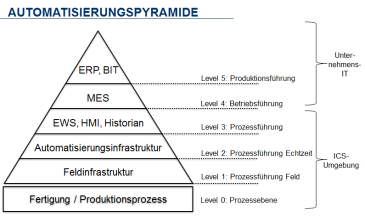

Betriebstechnik (englisch: Operational Technology (OT)) ist Hard- und Software, die Änderung durch die direkte Überwachung und / oder Steuerung von physikalischen Geräten, Prozessen und Ereignissen im Unternehmen erfasst und bewirkt [GART1].
In der Industrie, zu der unter anderem auch die Kritischen Infrastrukturen gehören, zählen dazu insbesondere industrielle Steuerungssystemen (Industrial Control Systems, ICS) und Automationslösungen, die dort die Steuerungs- und Regelfunktionen aller Art übernehmen. Weitere Beispiele sind Laborgeräte (z. B. automatisierte Mikroskop oder Analysewerkzeuge), Logistiksysteme (Barcodescanner mit Kleinrechner) oder Gebäudeleittechnik.
Die in der Vergangenheit übliche physische Trennung der OT von anderen IT-Systemen und Netzen in Büroanwendungen ist heute aufgrund zunehmender Integrationsanforderungen nur in Ausnahmefällen bei erhöhtem Schutzbedarf anwendbar. Mehrstufige Produktionsschritte und deren übergreifende Steuerung wie auch regulatorische Anforderungen erfordern eine zunehmende Öffnung auch über Organisationsgrenzen hinweg. Diese Entwicklung wird durch den Trend zur Optimierung von Fertigungsprozessen zur Steigerung der Wettbewerbsfähigkeit im Rahmen von Industrie 4.0 beschleunigt.
Da neben OT-spezifischen Komponenten zunehmend IT-Komponenten und Technologien aus der Office-IT in der OT eingesetzt werden, sind diese inzwischen vergleichbaren Gefährdungen ausgesetzt. Zugleich weisen die OT gegenüber der klassischen IT wesentliche Unterschiede auf, die das Anwenden dort etablierter Sicherheitsverfahren erschweren. So kann es Restriktionen aufgrund Herstellervorgaben oder gesetzlichen Anforderungen geben, die Veränderungen an Komponenten verhindern oder erschweren. Ein Beispiel hierfür sind die Anwendung von Sicherheitsupdates oder nachträgliche Härtungsmaßnahmen. Die OT unterliegt in der Regel auch deutlich längeren Lebenszyklen, auch über die Herstellerunterstützung hinaus, so dass auch die Verfügbarkeit von Sicherheitsupdates nicht durchgängig gewährleistet werden kann.
Diese Konvergenz der Technologien zwischen Office-IT und OT wird zukünftig eine vermehrte Zusammenarbeit zwischen den Knowhow-Trägern beider Funktionsbereiche fordern. Das technologische Know-how für IT, Kommunikation und Cyber-Defense liegt derzeit in den meisten Fällen bei den Office-IT Abteilungen. Eine erfolgreiche Lösung muss aber die Gegebenheiten der OT-Infrastruktur weitestgehend berücksichtigen. Dies kann jedoch nur mit der Unterstützung der OT-Verantwortlichen erfolgen.
1.2 Lebenszyklus
Der Lebenszyklus von ICS ergibt sich aus der Betriebsdauer der jeweiligen Produktionsanlage. Dieser ist immer deutlich länger als die in der Office-IT gewöhnlich anzutreffenden Zeiträume. Die typische Laufzeit beträgt zehn bis fünfzehn, mitunter auch 20 Jahre und länger. In der Office-IT sind es meist nur drei bis fünf Jahre.
Planung und Konzeption
Der Aufbau einer sicheren (im Sinne der Informationssicherheit) OT-Infrastruktur erfordert eine angemessene Planung. Bereits in der Konzeptionsphase sollten für die Informationssicherheit relevante Gesichtspunkte analysiert und in die Betrachtung einbezogen werden. Dies dient einer frühzeitigen Identifikation von Risiken im Entwicklungsprozess und kann in der Regel dann wirtschaftlicher behandelt werden. Im Rahmen der Planung sollte gleich das Bestandsverzeichnis und die initiale Dokumentation erstellt (siehe IND.1.M4 Dokumentation der OT-Infrastruktur) werden.
Die Entwicklung eines geeigneten Zonenkonzepts (siehe IND.1.M5 Entwicklung eines geeignete Zonenkonzeptes) bildet ein zentrales Element der Konzeptionsphase welches je nach Schutzbedarf einer mehr oder weniger ausgeprägten Abschottung bedürfen kann (siehe IND.1.M16 Stärkere Abschottung der Zonen). Bei der Konzeption ist auch der Umgang mit Wechseldatenträgern und mobilen Endgeräten (siehe IND.1.M9 Restriktiver Einsatz von Wechseldatenträgern und mobilen Endgeräten) und eine sichere (Fern-)Administration (siehe IND.1.M8 Sichere (Fern-)Administration) zu berücksichtigen. Dies sollte zusätzlich durch Konzepte für den Schutz vor Schadprogrammen (siehe IND.1.M3 Schutz vor Schadprogrammen) unterstützt werden.
Beschaffungsempfehlungen
Die Beschaffung einer sicheren ICS-Infrastruktur ist ein komplexer Prozess, im Rahmen dessen die notwendigen Anforderungen sinnvoll zwischen Betreiber, Integrator und Hersteller aufgeteilt und kommuniziert werden müssen (siehe IND.1.M11 Sichere Beschaffung und Systementwicklung).
Umsetzung
Damit die ICS-Infrastruktur sicher zu betreiben ist, muss sie in die Sicherheitsorganisation eingebunden werden (siehe IND.1.M1 Einbindung in die Sicherheitsorganisation). Mitarbeiter, die Aufgaben in ihrem Rahmen übernehmen, müssen in Bezug auf typische Gefährdungen sensibilisiert und geschult sein (siehe IND.1.M2 Sensibilisierung und Schulung des Personals). Um Maßnahmen entwerfen und bewerten zu können, ist schließlich eine gründliche Dokumentation der Infrastruktur unabdingbar (siehe IND.1.M4 Dokumentation der OT-Infrastruktur).
Darüber hinaus sind weitere Prozessbestandteile erforderlich, um den notwendigen Rahmen zu bilden, in dem ein sicherer Betrieb möglich ist: IND.1.M6 Änderungsmanagement in der OT und IND.1.M7 Etablieren einer Berechtigungsverwaltung, bei erhöhtem Schutzbedarf eventuell zusätzlich IND.1.M15 Prüfung und Überwachung von Berechtigungen und IND.1.M14 Starke Authentisierung an OT-Komponenten.
Betrieb
Der sichere Betrieb einer ICS-Infrastruktur umfasst ein Bündel von Prozessen und Maßnahmen, welche in IND.1.M6 Änderungsmanagement in der OT beschrieben sind. Grundlage des sicheren Betriebs ist die zuverlässige Erkennung von Störungen und Anomalien und wird mit IND.1.M19 Monitoring, Protokollierung und Detektion hervorgehoben.
Notfallvorsorge
Auch bezüglich der Notfallplanung gibt es einige Besonderheiten im Bereich ICS. Es müssen geeignete Konzepte für die Wiederherstellung der Infrastruktur nach einem Ausfall von Komponenten oder einer Kompromittierung der Infrastruktur beschrieben werden und vorliegen.
2 Maßnahmen
Im Folgenden sind spezifische Umsetzungshinweise im Bereich "Betriebs- und Steuerungstechnik" aufgeführt.
2.1 Basis-Maßnahmen
Die folgenden Maßnahmen sollten vorrangig umgesetzt werden:
IND.1.M1 Einbindung in die Sicherheitsorganisation
Es muss ein Informationssicherheits-Managementsystem (ISMS) für die OT-Infrastruktur etabliert werden. Dieses OT-ISMS kann entweder als selbständiges ISMS oder als Teil eines Gesamt-ISMS existieren und sollte in seinem Geltungsbereich die Definition von Zielen und Werten, Prozessen, Rollen, Verantwortlichkeiten und Vorgaben für die OT-Infrastruktur explizit umfassen.
Insbesondere sollte auf die besonderen Anforderungen der OT eingegangen werden, die sich aus den besonderen Rahmenbedingungen wie z. B. Regelungen zur Gewährleistung ableiten lassen. Hierbei sollten die alternativen Vorgehensweisen zur Office-IT skizziert werden.
Aufbau einer Sicherheitsorganisation
Die Institution muss eine Sicherheitsorganisation aufbauen, welche die Rollen und Verantwortlichkeiten für die Informationssicherheit der OT-Infrastruktur und -Komponenten regelt. Dabei sollte die Sicherheitsorganisation alle an dem Betrieb von OT-Komponenten beteiligten Parteien berücksichtigen (z. B. Hersteller, Integrator/Maschinenbauer, Outsourcing-Partner, Drittanbieter, Spezialisten für die physische Sicherheit, Produktions- und Instandhaltungsleiter).
Es muss ein Gesamtverantwortlicher für die Informationssicherheit in der OT bestimmt und innerhalb der Organisation bekannt sein. Im folgenden wird dieser als ICS-Informationssicherheitsbeauftragter bezeichnet. In größeren Institutionen sollte zudem für jede Anlage, alternativ je Komponententyp/Schicht/Zone ein Verantwortlicher für die Informationssicherheit bestimmt werden.
Dabei kann sowohl eine Sicherheitsorganisation für die gesamte Institution aufgebaut und betrieben werden, welche die Bereiche Office-IT und OT umfasst, oder aber getrennte Sicherheitsorganisationen für die beiden Bereiche. Um Synergien zu nutzen und Fehlplanungen sowie Risiken zu vermeiden, muss eine enge Kooperation zwischen den OT- und Office-IT-Experten stattfinden. Welche Struktur für eine Organisation geeignet ist, hängt stark von den vorhandenen Strukturen und eingespielten Prozessen in einer Institution ab. Entscheidend ist, dass ein Informations- und Wissensfluss in beide Richtungen stattfindet und die jeweils Verantwortlichen in ihren Bereichen ernst genommen werden. Dafür müssen beide Seiten offen für die jeweiligen Besonderheiten des anderen Bereichs sein und zur Vermeidung von Missverständnissen die Kultur und Sprache der anderen Seite berücksichtigen. Eine Doppelspitze (Informationssicherheitsbeauftragter/ICS-Informationssicherheitsbeauftragter) kann in manchen Institutionen eine sinnvolle Lösung sein, wenn Aufgabenteilung und Schnittstellen eindeutig und schriftlich geklärt sind.
Beachtung gesetzliche Rahmenbedingungen
Gesetzliche, regulatorische und sonstige besonderen Vorgaben für die OT sowie die jeweilige Branche bzw. Sektor müssen bekannt sein und in ihren Auswirkungen für die Institution interpretiert werden. Dies gilt insbesondere für Institutionen, die kritische Infrastrukturen betreiben, aber auch zunehmend in anderen Bereichen. Neben den nationalen Vorgaben sind möglicherweise auch europäische und internationale Bestimmungen zu beachten. Es sollten Verantwortlichkeiten und Prozesse eingerichtet werden, um sicherzustellen, dass alle relevanten Anforderungen zeitnah den entscheidenden Stellen bekannt gegeben werden.
Festlegung und Einhaltung von Vorgaben
Es sollte ein Prozess existieren, wie konkrete Vorgaben für bestimmte Themenbereiche (Richtlinien/Policies) im ICS-Bereich verfasst, kommuniziert, fortgeschrieben, bewertet und zur Umsetzung gebracht werden. Diese können teilweise, wo angemessen und vorhanden, aus dem Bereich der Office-IT übernommen werden. Häufig sind jedoch Anpassungen notwendig, um die Besonderheiten der OT zu reflektieren.
Bei der Auswahl von Komponenten sollte eine Überprüfung von definierten (funktionalen und informationssicherheitsrelevanten) Anforderungen durchgeführt werden. Dabei können einzelne Komponenten bis hin zur gesamten OT Prüfgegenstand sein.
Weiterführende Informationen
Weiterführende Informationen zu Aufbau und Gestaltung des Sicherheitsorganisation sind im Baustein ISMS Sicherheitsmanagement dokumentiert.
IND.1.M2 Sensibilisierung und Schulung des Personals
Die Umsetzung der notwendigen Sensibilisierung und Wissensbildung des Personals kann auf unterschiedliche Art erfolgen. Es kann sich um spezielle Schulungsveranstaltungen handeln oder Online-Schulungen. Inhalte und Häufigkeit sollten sich an den Aufgaben der Mitarbeiter und den Bedrohungsszenarien orientieren. Eine einmalige Information ist mindestens für alle Mitarbeiter durchzuführen.
Betriebspersonal sollte auf die an einem OT-spezifischen Arbeitsplatz relevanten Bedrohungen oder Probleme hingewiesen werden. Dies kann z. B. der Umgang mit Wechseldatenträgern oder Smartphones sein.
OT-Verantwrotliche und ICS-Informationssicherheitsbeauftragter sollten spezifischer hinsichtlich der Bedrohungslage und notwendigen Handlungsbedarfen geschult werden.
Für KMUs bietet es sich in der Regel an, die Schulung durch Externe durchführen zu lassen, da diese stets aktuelles Praxiswissen mitbringen können. Bei größeren Institutionen lohnt sich eventuell. die Errichtung eines eigenen Kursprogramms.
Vorschläge für genauere Fortbildungspläne können z. B. dem Dokument „Empfehlungen für Fortbildungs- und Qualifizierungsmaßnahmen im ICS-Umfeld“ [BSI-CS 123] entnommen werden.
Zusätzlich ist zu empfehlen, die Sensibilisierung bezüglich Social Engineering regelmäßig und mit Nachdruck voranzutreiben, etwa durch Aufklärungskampagnen oder durch mit Datenschutz und Betriebsrat abgestimmte sorgsame Tests, welche niemanden persönlich bloßstellen dürfen.
IND.1.M3 Schutz vor Schadprogrammen
Ein Konzept zum Schutz vor Schadprogrammen muss die bedrohten OT-Komponenten sowie alle möglichen Infektionswege betrachten, Risiken bewerten und wo notwendig geeignete technische und organisatorische Schutzmaßnahmen festlegen.
Zu den möglichen Infektionswegen gehören unter Anderem:
alle Außenschnittstellen inkl. Verbindungen zum Office-Netz, Internet und sonstigen Extranets
Wechseldatenträger
Service-Station und Programmiergeräte, auch von Dienstleistern
sowie grundsätzlich auch neu beschaffte Komponenten (Festplatten, USB-Sticks, Software mit Trojanern etc.)
Virenscanner
Ist die Installation und der uneingeschränkte Betrieb von Virenschutzprogrammen auf OT-Komponenten möglich und durch den Hersteller/Integrator freigegeben, sollten diese Systeme automatisiert mit aktuellen Viren-Signaturen versorgt werden.
Sichere Konfiguration von Virenschutzprogrammen
Aufgrund der hohen Verfügbarkeitsanforderungen in der OT sollte bei kritischen Systemen unter Umständen eine angepasste Konfiguration für Virenschutzprogramme verwendet werden. Dabei sollten Einstellungen deaktiviert werden, die zu einer unbeabsichtigten Beeinträchtigung der Produktion führen können (z. B. aufgrund einer hohen Systemlast durch einen Virensuchlauf). Oftmals geben Hersteller nur solche eingeschränkten Konfigurationen zum Betrieb von Virenschutzprogrammen auf den OT-Komponenten frei.
Virenschutzprogramme können gewöhnlich in zwei unterschiedlichen Modi operieren. Zum einen kann vor dem Zugriff auf Anwendungen oder Dateien allgemein eine Überprüfung stattfinden oder der Scanvorgang wird manuell oder zeitgesteuert ausgelöst. Gewöhnlich sollte das Virenschutzprogramm automatisiert bei allen Zugriffen scannen.
Die Auswahl sollte dabei in Abhängigkeit von Empfehlung des Herstellers des Virenschutzprogramms und der OT-Komponente erfolgen. Sollte eine kontinuierliche Prüfung (z. B. aus Performancegründen) nicht möglich sein, sollten alternative Schutzmaßnahmen ergriffen werden.
Darüber hinaus sollte in regelmäßigen Abständen ein vollständiger Scan aller Daten durchgeführt werden. Ein zusätzlicher, vollständiger Scan mit aktuellen Signaturen sollte nach der Erstinstallation und nach Änderungen am System durchgeführt werden.
Grundsätzlich sollten folgende Einstellungen bei der Konfiguration der Virenschutzprogramme berücksichtigt werden:
Manuelle Scans sollten ausschließlich bei Stillstand der Produktion durchgeführt und dokumentiert werden.
Ausschließlich lokale Medien sollten geprüft werden. Netzlaufwerke sollten nicht gescannt werden, um parallele Scans durch mehrere Rechner zu vermeiden.
Nur Administratoren dürfen die Befugnisse haben, das Virenschutzprogramm zu konfigurieren oder zu deaktivieren.
Das Virenschutzprogramm sollte Funde an eine zentrale Stelle melden. Eine automatische Terminierung der Prozesse/Programme kann bei einen False Positive Fund zu einem Ausfall der OT-Komponente führen und ist daher kritisch zu prüfen.
Der Installationsprozess sowie die Konfiguration sollten für jede OT-Komponente dokumentiert werden.
Zentraler Viren
Das OT-Netz sollte soweit möglich autark betrieben werden und nur zwingend notwendige Verbindungen in andere Netze erlauben. Sind Verbindungen in andere Netze notwendig, so sollte diese nicht direkt erfolgen, sondern stets über einen Proxy-Server geführt werden.
Daher sollten die Signaturen für das Virenschutzprogramm nicht direkt aus dem Internet, sondern über einen zentralen Virensignaturverteildienst in der DMZ bezogen werden. Dieser lädt die aktuellen Signaturen stellvertretend aus dem Internet und stellt sie den OT-Komponenten zur Verfügung. Somit sind keine direkten Verbindungen dem OT in das Internet erforderlich.
Zeitnahe Aktualisierung der Viren-Signaturen
Oftmals sind zeitnahe Updates der Virensignaturen und der Virenschutzprogramme auf OT-Komponenten nicht möglich. Daher sind hierbei folgende Aspekte zu berücksichtigen.
Die OT-Komponenten sollten gemäß ihres möglichen Aktualisierungsintervalls in Gruppen unterteilt werden. Zusätzlich sollten redundant ausgelegte OT-Komponenten unterschiedlichen Gruppen zugeordnet werden, um beispielsweise auf die Verteilung von fehlerhaften Virensignaturen in der Produktionsumgebung (z. B. False Positives) umgehend reagieren zu können.
Die Verteilung der Virensignaturen in die Gruppen mit redundanten ICS sollte mit einer Zeitverzögerung durchgeführt werden (z. B. 12 Stunden), um bei Problemen weiterhin den Betrieb mit dem zweiten System aufrecht erhalten zu können.
Aufgrund der hohen Verfügbarkeitsanforderungen sollten nur vom Hersteller/Integrator der OT-Komponente freigegebene und als unkritisch klassifizierte Signaturen verteilt werden.
Virenschutzprogramm auf der Firewall (Virus-Wall)
Eine Virus-Wall untersucht den Datenverkehr zwischen zwei Netzen auf Schadprogramme. Auf diese Weise kann sie stellvertretend für OT-Komponenten mit keinem oder eingeschränktem Virenschutzprogramm übermittelte Daten prüfen. Dazu werden diese OT-Komponenten in ein separates Netzsegment platziert und der Datenverkehr zu und von diesem Netz durch ein Application Level Gateway (ALG) mit installiertem Virenschutzprogramm gefiltert und auf Schadprogramme untersucht. Siehe hierzu auch IND.1.M16 Stärkere Abschottung der Zonen.
Alternativen für Virenscanner
Virenschutzprogramme können jedoch in der Regel nicht auf allen Komponenten installiert werden. Mögliche Einschränkungen können sich aus einer fehlenden Herstellerfreigabe, nicht unterstützten Betriebsplattformen (z. B. Feldsysteme oder SPS), fehlenden Möglichkeiten zur Aktualisierung von Virensignaturen oder potentiellen Risiken in der Verfügbarkeit ergeben, so dass zumeist auch ergänzende oder alternative technische oder organisatorische Schutzmaßnahmen umgesetzt werden müssen. Alternative technische Schutzmaßnahmen können sein:
Absicherung von Außenschnittstellen einer OT-Komponente (Standortanbindungen, Zugänge von Dienstleistern, Schnittstellen zum Office-Netz und dem Internet)
Ausgliedern von bedrohten Systemen in abgesicherte Netzsegmente (mit einer Filterkomponente, falls eine Verbindung zu anderen Zonen notwendig ist (siehe Abschnitt Virenschutzprogramm auf der Firewall (Virus-Wall) oben)
Einschränken von Wechseldatenträger (z. B. USB-Datenträger)
Deaktivieren von Systemschnittstellen
Einsatz einer Wechseldatenträgerschleuse
Etablieren von netzbasierten Zugangskontrollen im Benutzerbereich (Vermeidung von Fremdgeräten)
Einsatz netzbasierter Schutzsysteme
Application Layer Gateways (ALG)
Application Whitelisting (Beschränkung von ausführbaren Programmen auf ICS)
Falls möglich, regelmäßiges Scannen der OT-Komponenten von einem Boot-Medium oder USB-Device mit aktuellem Virenschutzprogramm und aktuellen Signaturen, beispielsweise während eines geplanten Wartungsfensters (auf diese Weise kann eine Infektion zumindest rückwirkend erkannt und dann beseitigt werden).
Alternative organisatorische Schutzmaßnahmen können sein:
Regelungen zum Datenaustausch und Gebrauch von Wechseldatenträgern
Verbot der Anbindung von Fremdgeräten
Manuelle Virenprüfung mit speziellen offline-fähigen Antivirus-Lösungen in Wartungsfenstern
Um einen wirksamen Schutz der OT vor Schadprogrammen zu erreichen, sind daher abgestimmte und angemessene Sicherheitsmaßnahmen unter Berücksichtigung der umgebungsspezifischen Besonderheiten auszuwählen und umzusetzen. Auf dieser Basis ist ein Virenschutzkonzept zu erstellen, aus dem hervorgeht, wie der Schutz vor Schadprogrammen erreicht wird.
Application Whitelisting
Es besteht die Möglichkeit, mittels spezieller Sicherheitssoftware zur Applikationskontrolle, das Ausführen von Programmen zu überwachen und einzuschränken. Anders als bei gängigen Virenschutzprogrammen wird nicht versucht, unerwünschte Software zu blockieren, sondern es wird der Ansatz verfolgt, ausschließlich erwünschten Programmen die Ausführung zu erlauben.
Demzufolge können zwei unterschiedliche Ansätze unterschieden werden, um Anwendungen und unerwünschtes Verhalten eines Systems zu erkennen und zu verhindern (z. B. im Fall von Schadprogrammen). Bei dem Blacklist-Ansatz gewöhnlicher Virenschutzprogramme geschieht dies auf der Grundlage bekannter Signaturen und Heuristiken unerwünschter Anwendungen. Diese Herangehensweise weist einige Schwachstellen auf, wie z. B. dass sich neuartige Schadprogramme selbstständig bei jeder neuen Kopie verändern können und somit eine neue, noch unbekannte Signatur aufweisen. So ist der erfolgreiche Schutz von der Aktualität und Verfügbarkeit der Signaturen abhängig.
Beim Application Whitelisting werden nur solche Anwendungen und solches Verhalten erlaubt, welches explizit freigegeben wurde. Alles andere ist verboten. Auf diese Weise besteht keine Abhängigkeit zu aktuellen Signaturen. Insbesondere bei Systemen wie im OT-Umfeld, die nur geringfügigen Änderungen durch Softwareinstallationen unterliegen, eignet sich dieses Verfahren. Daher sollte, soweit möglich, eine Applikationskontrolle stets nach dem Whitelist-Ansatz erfolgen.
Um das Ausführen von unerlaubter Software zu verhindern, kann eine solche Schutzsoftware beispielsweise auf folgende unterschiedliche Attribute zurückgreifen:
Zertifikate (Signieren von vertrauenswürdiger Software z. B. durch eine zentrale Stelle),
Dateisystempfad (Bestimmte Bereiche werden als vertrauenswürdig deklariert),
Hashes (Die Anwendungen und möglicherweise unbefugte Änderungen werden anhand eines Hashwertes der Dateien identifiziert),
System- und Benutzerverhalten (z. B. Nutzung gewisser TCP-Ports, Bedienung nur zu bestimmten Zeiten).
2.2 Standard-Maßnahmen
Gemeinsam mit den Basis-Maßnahmen entsprechen die folgenden Maßnahmen dem Stand der Technik im Bereich "Betriebs- und Steuerungstechnik".
IND.1.M4 Dokumentation der OT-Infrastruktur
Eine vollständige, aktuelle und praktisch nutzbare Dokumentation der OT ist für einen ordnungsgemäßen Betrieb unabdingbar.
Erst recht gilt dies für die Informationssicherheit, da nur auf dieser Grundlage Notwendigkeit, Angemessenheit und Umsetzungsgrad vieler weiterer Maßnahmen festgestellt und mögliche Schwachstellen und Angriffsvektoren systematisch gefunden werden können.
Die Tiefe der Dokumentation kann sich unterscheiden. Beispielsweise kann man sich bei einem PLS, bei dem es sich um geschlossenes System handelt, auf die Außenschnittstelle beschränken. Das PLS selbst hat in der Regel eine interne Verwaltung bzw. einen einheitlichen Soft- / Hardware-Stand in Abhängigkeit der Systemversion. In anderen Fällen können sämtliche Komponenten dokumentiert werden.
Erstellen und Pflegen der Dokumentation
Die Form der Dokumentationsführung sollte sich an den Bedürfnissen der Zielgruppe orientieren und möglichst praktikabel gestaltet werden. Die Dokumentation kann in Form von einem oder mehreren Dokumenten, eingebettet in eine Website oder in spezifischen Dokumentationswerkzeugen (Tools) für IT-Umgebungen erfolgen. Zu beachten sind jedoch die bestehenden Anforderungen an die Verfügbarkeit der Dokumentation, welche insbesondere auch in Störungs- und Notfallsituationen zugänglich sein muss. Dies kann etwa durch Replikation auf Notsysteme oder als Ausdruck in Papierform am jeweiligen Arbeitsplatz und/oder am Notfallstandort erfolgen. Gleichzeitig sollte bei der Ablage auch die Sensibilität der Dokumentation berücksichtigt sein, um unbefugten Zugriffen vorzubeugen.
Der Betreiber muss sicherstellen, dass betriebsrelevante Änderungen in der Anlagendokumentation erfasst werden. Durch regelmäßig durchgeführte Prüfungen auf Aktualität können Versäumnisse im Tagesgeschäft identifiziert und nachgeholt werden.
Anforderungsaustausch mit Integrator und Hersteller
Dort, wo wesentliche Teile einer OT-Infrastruktur von Dienstleistern (Integratoren bzw. Maschinen-/Anlagenbauern) aufgebaut und gewartet werden, müssen Anforderungen, Nachweise und Dokumentationen in beide Richtungen weitergegeben werden: Sicherheitsanforderungen sollten möglichst schon im Rahmen der Ausschreibung, spätestens jedoch während der Umsetzung des Projekts an den Auftragnehmer kommuniziert werden.
Es sollte eine aktuelle und umfassende Dokumentation mitgeliefert oder erstellt werden, welche Informationen zu Sicherheitsfunktionen, Schwachstellen, Konfigurationen und notwendigen Schutzmaßnahmen enthalten.
Bestandsverzeichnis
Um Inkompatibilitäten und Inkonsistenzen von Software in spezifischen Versionen sowie von Konfigurationen (z. B. IP-Adressen-Konflikte) zu vermeiden, sollte in einer Liste die Konfiguration der einzelnen OT-Komponenten dokumentiert sein. Darüber hinaus können auf diese Weise OT-Komponenten schnell identifiziert werden, wenn neue Updates verfügbar oder Konfigurationsänderung nötig sind. Auch wenn Updates nicht möglich sind, so kann anhand einer solchen Liste die potentielle Betroffenheit zeitnah bewertet werden.
Die Liste kann beispielsweise folgende Eigenschaften dokumentieren:
Funktionaler Name,
Computername,
Zuständiges Administrations-Personal mit hinterlegten Kontaktdaten (eventuell auch Servicezeiten),
Physischer Aufstellungsort,
MAC-Adresse(n),
IP-Adresse(n),
DNS-Bezeichnung,
FQDN,
Hersteller,
Modell/Produkttyp
Betriebssystem,
installierte Anwendungen und Dienste unter Angabe von Ports und eingesetzten Protokollen,
Patchstand jeder Software mit dem Datum der Einspielung des Patches (bei IT-Systemen wie SPSen und technsich verwandten Geräte ist es wichtig, Firmware-Stände jeder CUPU und jedes Moduls vorzuhalten),
Datum der letzten Virenprüfung (bzw. Intervall bei automatischer Wiederholung) und
Backup-Intervall (vollständig und inkrementell), Umfang der Datensicherung und die zuletzt durchgeführte Datensicherung.
Netzplan bzw. Netzstrukturplan
Die Struktur des Netzes sollte in einem physischen und einem logischen Netzplan dokumentiert werden. Soweit für die Umgebung sinnvoll darstellbar, soll der physische Plan die Orte und OT-Infrastruktur, z. B. Kabel, Gebäude und Funkverbindungen darstellen. Der Plan könnte hierzu enthalten:
Name/Bezeichnung und Funktionalität der Systeme,
mindestens ein technisches Merkmal, durch das das jeweilige System/Netzsegment identifizierbar ist, z. B.
IP-Netzadressen und Netzmasken z. B. 192.168.1.0/24,
IP-Adressen aller angeschlossenen Netzinterfaces z. B. 192.168.1.54
MAC-Adressen (mindestens dann, wenn und wo nicht primär IP-Kommunikation eine Rolle spielt),
Der logische Netzplan stellt die physischen Gegebenheiten nicht dar und fokussiert auf die strukturelle Sicht und die Sicherheitszonen.
Neben den Kommunikationsmöglichkeiten, die der Netzplan darstellt, sollten auch die Kommunikationsbeziehungen zwischen den Komponenten erfasst werden. Dies bedeutet, welche Komponenten miteinander kommunizieren können müssen. Dies ist notwendig, um unbefugten Datenverkehr identifizieren und unterbinden zu können.
Redundanzen (gleichartige Systeme mit analoger Funktion, Konfiguration und gleichem Schutzbedarf) können im Netzstrukturplan zusammengefasst werden, da dies der Lesbarkeit dient. Bei hohem Verfügbarkeitsbedarf sollten die Redundanzen (Anzahl, Typ (etwa Hot-Standby, Failover, Load Balancing etc.)) jedoch aus dem Netzstrukturplan hervorgehen. Dies kann durch Annotierung der Objekte erfolgen, um den Plan selbst nicht aufzublähen.
Administrations- und Benutzerhandbücher
Für den sicheren und unterbrechungsfreien Betrieb ist es notwendig, dass das Service- und Wartungspersonal sowie Administratoren alle Funktionen der OT kennen und diese bedienen können. Kommt es zu Ausfällen beim Personal (z. B. krankheitsbedingt oder aufgrund einer Kündigung), sollte sichergestellt sein, dass die benötigten Informationen weiterhin in der Institution verfügbar und für die Vertreter zugänglich sind.
Daher sollte für die OT und jede Anwendungen ein Administrations- und ein Benutzerhandbuch verfügbar sein (möglicherweise auch ein Dokument, welches beide Themen abdeckt). Neben betrieblichen Regeltätigkeiten und Abläufen sollten die Dokumente auch Aspekte der Informationssicherheit abdecken, darunter:
Notwendiges Firewall-Regelwerk (mit Dienst, Protokoll und Port),
Anweisungen zur Härtung spezifischer Anwendungen,
Anweisungen zur sicheren Konfiguration,
Spezifische Risiken (z. B. bei der Aktivierung einer bestimmten Konfiguration),
Systemwiederherstellung (zur Notfallvorsorge).
Die Dokumentationslage sollte die Fortführung des Betriebs durch Dritte ermöglichen.
Energiewirtschaft und andere KRITIS-Sektoren
Für die Energiewirtschaft gelten aufgrund des IT-Sicherheitsgesetzes zusätzliche Anforderungen. Hier verlangt der IT-Sicherheitskatalog der Bundesnetzagentur gemäß §11 Absatz 1a des Energiewirtschaftsgesetzes (EnWG) neben der Errichtung eines ISMS, das den Anforderungen der DIN ISO/IEC 27001 in der jeweils geltenden Fassung genügt und bei dessen Implementierung die Normen DIN ISO/IEC 27002 und DIN ISO/IEC TR 27019 (DIN SPEC 27019) in der jeweils geltenden Fassung zu berücksichtigen sind, auch die Erstellung einer bestimmten Form des Netzstrukturplans. Der Netzbetreiber hat eine Übersicht über die vom Geltungsbereich des IT-Sicherheitskatalogs betroffenen Anwendungen, Systeme und Komponenten mit den anzutreffenden Haupttechnologien und deren Verbindungen zu erstellen. Die Übersicht ist nach den Technologiekategorien „Leitsystem/Systembetrieb“, „Übertragungstechnik/Kommunikation“ und „Sekundär-, Automatisierungs- und Fernwirktechnik“ zu unterscheiden. Kapitel E.IV Tabelle 2 des IT-Sicherheitskatalogs enthält eine kurze Beschreibung zu den Technologiekategorien sowie einige Beispiele, welche in der Regel jedoch an die konkrete OT angepasst werden müssen. Im Geltungsbereich des ISMS wie im Netzstrukturplan müssen mindestens die Telekommunikations- und EDV-Systeme enthalten sein, die „für einen sicheren Netzbetrieb notwendig“ sind. Die Definition der letztgenannten Kategorie ist von der Institution vorzunehmen und zu begründen.
Auf andere KRITIS-Sektoren kommen zukünftig ebenfalls Sonderanforderungen zu. Hier muss die jeweilige Regulierung und Umsetzungspraxis beobachtet werden.
Wichtig ist, eine begründete Abgrenzung vorzunehmen, welche Systeme für den sicheren Betrieb der industriellen bzw. KRITIS-Funktionen notwendig sind. Dies kann z. B. im Netzplan geschehen und sollte mit dem Zonenmodell (siehe IND.1.M5 Entwicklung eines geeigneten Zonenkonzepts) kompatibel sein.
IND.1.M5 Entwicklung eines geeigneten Zonenkonzepts[IT-Betrieb]
Das OT-Netz sollte aus mehreren Netzsegmenten mit individuellen Schutzbedarfen bestehen. Der Datenverkehr zwischen den verschiedenen Ebenen (vgl. Abbildung: Ebenen der Automatisierungspyramide) sollte durch eine Datenflusskontrolle(z. B. mittels Firewall) auf das betriebliche notwendige Maß reglementiert werden.

Abbildung: Ebenen der Automatisierungspyramide
Neben der Trennung von Netzen mit unterschiedlichen Funktionalitäten auf derselben Ebene sollten auch standortübergreifende Netze oder allgemein organisatorisch unabhängige Maschinen/Anlagen untereinander segmentiert werden (horizontale Segmentierung). So wird z. B. verhindert, dass sich Schadprogramme ungehindert auf alle Maschinen ausbreitet.
Der Verbindungsaufbau sollte grundsätzlich aus dem Netzsegment mit dem höheren Schutzbedarf in das Netzsegment mit dem niedrigeren Schutzbedarf aufgebaut werden.
Eine Umgehung der Netztrennung durch undokumentierte Verbindungen darf nicht stattfinden. Insbesondere sollten keine unkontrollierten Verbindungen zu Netzsegmenten mit unterschiedlichem Schutzbedarf zugelassen werden.
Berücksichtigung
Bei der Konzeption und Umsetzung des Zonenmodells müssen betriebliche Abhängigkeiten ermittelt und in ihren Auswirkungen untersucht werden. Damit wird die Betriebsstabilität im Rahmen der bestehenden Anforderungen gewährleistet und unter Berücksichtigung der Anforderungen der OT-Umgebung angemessen ausgestaltet. Für die Bewertung sind die Verfügbarkeitsanforderungen jeder Zone gemäß den Anforderungen der technischen Prozesse nach dem Maximalprinzip über alle Systeme der Zone zu bestimmen.
IND.1.M6 Änderungsmanagement im OT-Betrieb
Über die Lebenszeit der OT gilt es die Veränderungen an der Anlage und der möglichen neuen Gefährdungen laufend zu berücksichtigen und entsprechend Rechnung zu tragen.
Dokumentation
Beim Betrieb der Anlage gilt es, in die bestehende Dokumentation Änderungen und Anpassungen zu übernehmen. Ziel ist, stets über eine aktuelle Dokumentation zu verfügen, die den tatsächlichen Zustand der Systeme abbildet. Durch die kontinuierliche Fortschreibung entfallen aufwändige Bestandsanalysen.
Änderungsverwaltung
Administrative Änderungen an der bestehenden Infrastruktur oder OT-Komponenten können die Informationssicherheit der Umgebung beeinflussen und sollten über einen verbindlichen Änderungsprozess geplant, geprüft, im Rahmen der Möglichkeiten angemessen getestet, durchgeführt und dokumentiert werden. Die Ausprägung des Prozesses ist dabei stark von der jeweiligen Organisation bzw. OT abhängig und sollte nachvollziehbar dokumentiert sein. In weniger komplexen Umgebungen mit einem kleinen Administrationsteam kann der Änderungsprozess im Wesentlichen aus Ablaufvorgaben (Planung, Informationspflichten bei Wartungsarbeiten, Bezug von Software- und Updates, Ablauf von Tests (Testkonzept), Regelungen zum Einsatz von Dienstleistern) sowie aus Dokumentationsverpflichtungen (z. B. übergreifendes oder systemgebundenes Administrationsjournal) bestehen. In größeren Organisationen kann ein komplexerer Änderungsprozess bestehend aus Antrags-, Prüfungs-, Test- und Genehmigungsverfahren bestehen und den Einsatz unterstützender Tools (Formulare, technisch gestützte Arbeitsabläufe, CMDB, etc.) erforderlich machen.
Zeitsynchronisation
Eine Vielzahl an Prozessen, aber auch administrative Tätigkeiten, beruhen in der OT auf einer genauen und abgestimmten Zeit (z. B. die Nachvollziehbarkeit verteilter Protokolldaten, Beigabe von Zusatzstoffen in der Produktion zum richtigen Zeitpunkt etc.). Es muss aufgrund der Applikationsanforderungen abgewogen werden, wie die Zeitsynchronisation erfolgt.
Für die Synchronisation kann das Network Time Protocol (NTP) oder IEEE 1588 genutzt werden.
Das Zeitsignal für die Systeme sollte aus einer vertrauenswürdigen Quelle stammen. Zonen hoher Kritikalität etwa sollten ihre Zeit nicht aus einer weniger geschützten Zone beziehen, wenn das Signal möglicherweise manipuliert werden könnte. Die Clients auf den OT-Komponenten sollten die Zeit in einem einheitlichen, standardisierten Format interpretieren (z. B. unter Berücksichtigung von Zeitzonen, Winter- und Sommerzeit).
IND.1.M7 Etablieren einer Berechtigungsverwaltung
Unter Berechtigungen sind Privilegien von Personen zum
Zutritt (physikalischer Zugriff zu IT-Systemen),
Zugang (Erreichbarkeit eines Systems über Netzwerk) oder
Zugriff (Ausführbarkeit von Programmen und Funktionen sowie Nutzbarkeit von Daten)
zu verstehen.
Falsch gesetzte Berechtigungen können die Sicherheit einer IT-Umgebung wesentlich beeinträchtigen. Zu umfangreich oder zu Unrecht vergebene Rechte können durch Missbrauch oder Fehlhandlungen Störungen begünstigen, während zu gering gesetzte Rechte Regelabläufe erschweren und in kritischen Situationen die effektive Störungsbearbeitung behindern können.
Berechtigungen müssen daher bedarfsorientiert nach dem Minimalprinzip vergeben und in Bezug auf Änderungen aktiv gepflegt werden. Hierzu wird ein durchgängiger Prozess (Berechtigungsverwaltung) benötigt.
Die Berechtigungsverwaltung muss die folgenden grundlegenden Anforderungen erfüllen:
Bereitstellen eines Beantragungs-, Prüf- und Freigabeprozesses
Berechtigungen müssen formal beantragt und erfolgreich geprüft werden, bevor sie vergeben werden dürfen. Ein Berechtigungsantrag sollte von zumindest zwei Personen geprüft werden. Die Prüfung könnte durch den jeweilig Vorgesetzten und durch den jeweiligen Anwendungs- oder Systemverantwortlichen erfolgen.
Revisionssichere Pflege einer Bestandsübersicht und Historie
Das Berechtigungsmanagement muss eine vollständige Übersicht über die an eine Person vergebenen Berechtigungen besitzen. Diese Übersicht muss auch die Berechtigungshistorie einer Person sowie Informationen über den jeweils gestellten Berechtigungsantrag und durchgeführten Prüf- und Freigabeprozess umfassen.
Die Bestandsführung von Benutzerkonten und Berechtigungen muss in nutzbarer Form dargestellt und als Grundlage für ein Soll-/Ist-Vergleich genutzt werden können.
Verifikation bestehender Zugänge
Die Berechtigungsverwaltung benötigt eine Schnittstelle zum Personalprozess, damit Statusänderungen in Beschäftigungsverhältnissen von Mitarbeitern zeitnah berücksichtigt werden können. Zugänge und Berechtigungen von befristeten und externen Mitarbeitern sollten stets zeitlich befristet für die Dauer des Arbeits- bzw. Beauftragungsverhältnis angelegt werden.
Ergänzend sollte in einem festgelegten Zyklus (z. B. jährlich) eine manuelle Verifikation der eingerichteten Benutzerzugänge durchgeführt werden.
Bei IT-Berechtigungen sind zudem spezielle Vorgaben zur Berechtigungsverwaltung zu berücksichtigen.
Nutzung persönlicher Benutzerzugänge
Sofern vom System unterstützt, sollten Benutzerzugänge für die interaktive Systemnutzung durch Anwender und Administratoren als persönliche Konten erstellt und dem Besitzer fest zugeordnet werden. Ist die Nutzung persönlicher Zugänge technisch nicht möglich oder im bestehenden Umfeld nicht sinnvoll umsetzbar, muss die Vergabe von Gruppenzugängen nachvollziehbar bleiben.
Rollenbasierte Berechtigungsvergabe an persönliche Zugänge
Berechtigungen sollten persönlichen Benutzerzugängen grundsätzlich über Gruppen zugeordnet werden. Zur Wahrnehmung einer Benutzerrolle kann ein Benutzerzugang Mitglied einer oder mehrerer Gruppen sein. Die für ein System zur Verfügung stehenden Berechtigungsgruppen werden durch die jeweiligen Systeme und Anwendungen vorgegeben.
Vergabe spezieller Zugriffsberechtigungen
Besondere netzwerkseitige Zugangsberechtigungen, wie diese etwa durch Firewall-Freischaltungen oder Access Control Lists (ACL) auf Screening-Routern eingerichtet werden, werden typischerweise für die Arbeitsplatzrechner bestimmter Personen eingerichtet. Eine solche Zugriffsregel ist somit als Benutzerberechtigung zu verstehen und sollte in der Berechtigungsverwaltung geführt und im Rahmen der regelmäßigen Verifikation überprüft werden.
Die Verwaltung von Berechtigungen kann eigenständig für die OT durch die Institution erfolgen, oder in eine institutionsweite Berechtigungsverwaltung eingebunden sein.
Gruppen
Grundsätzlich ist die Nutzung persönlicher Benutzerzugänge aufgrund der höheren Nachvollziehbarkeit und Anwenderverantwortung zu bevorzugen. In bestimmten Fällen kann jedoch auch die Verwendung funktionaler Gruppenzugänge vertreten werden, wenn sich hierdurch betriebliche Vorteile oder eine verbesserte Verfügbarkeit erreichen lassen, welche mit anderen Mitteln nur aufwändig herzustellen wären. Jeder Gruppenzugang muss separat dokumentiert werden. Die Personen, die Zugriff auf den Personenzugang erhalten, müssen organisatorisch z. B. über Schichtpläne nachvollziehbar dokumentiert sein. Ein Beispiel könnte sein die Verwendung eines Zugangs „Bediener“ in einer Warte, welche rund um die Uhr besetzt ist und in der sich alle Personen mit Zutritt gegenseitig kennen. Die funktionalen Zugänge müssen ebenso wie andere Zugänge in den ordnungsgemäßen Prozess des Managements von Berechtigungen integriert sein. Es ist insbesondere darauf zu achten, dass jeweils nur die minimal benötigten Rechte erteilt werden. Im Zweifel können verschiedene Aufgaben auf verschiedene Zugänge verteilt werden, sodass idealerweise ein möglichst großer Teil des Personals nur lesenden Zugriff benötigt. Jeder Zugang muss einem Verantwortlichen zugeteilt sein.
Verantwortung für funktionale und technische Benutzerzugänge
Funktionale Zugänge sollten dem für die Anwendung Verantwortlichen zugeordnet sein. Technische Benutzer- und Dienstezugänge (etwa für Maschine- zu Maschine-Kommunikation bzw. die Integration mit anderen Anwendungen) sollten den für eine Komponente jeweilig Betriebsverantwortlichen zugeordnet sein.
Passwortverteilung und -management, Passwort
Es sollte eine Passwortrichtlinie umgesetzt sein, welche die folgenden Punkte berücksichtigt. Dabei können technische Lösungen als auch organisatorische Maßnahmen festgelegt werden.
Der Benutzer sollte durch Komplexitätsanforderungen daran gehindert werden, schwache Passwörter zu wählen (z. B. Länge, Alphabet mit Zahlen und Sonderzeichen).
Das Passwort sollte nur für einen vordefinierten Zeitraum gültig sein. Der Benutzer sollte daraufhin aufgefordert werden, ein neues, vom alten abweichendes Passwort zu wählen.
Die Anzahl fehlgeschlagener Anmeldeversuche sollte begrenzt werden (z. B. temporäre Sperrung des Benutzerzugangs).
Bei der Auswahl der Maßnahmen ist sicherzustellen, dass die Anlage stets bedienbar bleibt und gefährliche Zustände ausgeschlossen bleiben.
Eine mögliche Alternative zu Passwörten stellen Smart-Cards dar.
Vermeidung von Missbrauch
Ein unbefugter Zugriff auf Systeme sollte verhindert werden. Es sollte erkennbar und dokumentierbar sein, welcher Benutzer aktiv war (vgl. IND.1.M10 Monitoring, Protokollierung und Detektion).
Es gibt bestimmte Betriebssituationen, die einen unmittelbaren Bedienzugriff in die OT benötigen. Dabei ist eine Abmeldung oder Bildschirmsperre nicht akzeptabel. In diesen Fällen sollten die Systeme durch kompensierende Schutzmaßnahmen vor dem unbefugten Zugriff geschützt werden (z. B. besetzter Leitstand).
In weniger kritischen Bereichen sollte die Bedienung gesperrt werden und lediglich eine Anzeige der aktuellen Informationen erfolgen. Auf diese Weise ist eine Beobachtung weiterhin möglich, der ungehinderte Zugriff jedoch verhindert.
Zur Authentisierung können Lösungen unter Nutzung von Chip- oder RFID-Karten mit Benutzer-PIN genutzt werden, um die Eingabe von komplexen Passworten zu vermeiden.
IND.1.M8 Sichere Administration[IT-Betrieb]
Die Verwaltung von aktiven Systemkomponenten wie Serversystemen, Netz- oder OT-Komponenten erfolgt entweder an der lokalen Konsole, über eine serielle Schnittstelle oder bei vernetzten Komponenten nach der Ersteinrichtung typischerweise per netzbasiertem Fernzugriff.
Inbetriebnahme
Für die Erstkonfiguration einer Komponente sollte eine Anleitung bzw. Prüfliste erstellt werden, die gewährleistet, dass sicherheitsrelevante Einstellungen personenunabhängig durchgesetzt werden. Die jeweilig vorzunehmenden Einstellungen sind komponentenabhängig. Sie können beispielsweise umfassen (Aufzählung nicht vollständig):
Deaktivieren von
nicht erforderlichen oder unsicheren administrativen Schnittstellen (SNMP, HTTP, Service-Ports, usw.)
entbehrlichen Standardbenutzerkonten
bzw. Deinstallation nicht erforderlicher Funktionen
Beschränkung administrativer Zugriffe auf Administrationsnetze (Access Control Lists)
Verschlüsselte Speicherung von Passwörtern
Zeitsynchronisierung
Aktivieren der Systemprotokollierung / Konfiguration von Protokollierungsservern
Prüfen auf und Ändern von potentiell vorhandenen Standardpasswörtern
Einbindung in zentrale Verwaltungs- oder Authentisierungssysteme
Sicheres Hinterlegen von Administrationspasswörtern
eventuell lokale Firewall oder Integritätsprüfungen
Die Erstkonfiguration kann auch auf Basis einer initial erstellen Referenzkonfiguration durchgeführt werden. Die Erstkonfiguration sollte möglichst in einer sicheren Umgebung erfolgen und auch stets das Einspielen der verfügbaren Sicherheitsaktualisierungen (Patches) umfassen, bevor eine Komponente in Betrieb genommen wird. Vor der Integration in das OT-Netz wird empfohlen, die Echtheit der Komponente zu prüfen und auf kompromitierendes Verhalten zu testen.
Konfigurationen an der lokalen Konsole
Konfiguration von OT-Komponenten an der lokalen Konsole beschränkt sich bei vielen Komponenten auf die Erstkonfiguration bei der Inbetriebnahme, sodass die Verwaltung im Betrieb über netzbasierte Fernzugriffe erfolgen kann. Die Konfiguration nicht vernetzter Komponenten erfolgt auch weiterhin über die lokale Konsole. Die lokale Konsole wird zudem oftmals als alternative Konfigurationsmöglichkeit im Störungsfall der Netzwerkinfrastruktur beibehalten und nicht deaktiviert.
Der physische Zugang zu aktivierten Systemkonsolen muss daher auf geeignete Weise beschränkt werden, etwa durch gesicherte Räumlichkeiten oder abschließbare Serverschränke. Des Weiteren sollte der Zugriff auf die Konsole durch ein Passwort gesichert und auf autorisierte Zugänge beschränkt sein.
Fernwartung
Die Fernwartung sollte grundsätzlich durch sichere Protokolle wie zum Beispiel TLS-gesicherte Verbindungen, SSH oder SNMPv3 erfolgen. Klartextprotokolle sind zu vermeiden. Falls möglich, sollte die Einrichtung eines dedizierten Administrationsnetzes bzw. Zugriffsbeschränkungen (ACLs) vor unbefugtem Zugriff schützen.
Die Sicherheit der Wartungsrechner ist für den sicheren Betrieb der Anlage unverzichtbar. Diese müssen daher angemessen vor Kompromittierung oder Missbrauch geschützt werden. Als Grundlage hierfür sollten die einschlägigen Bausteine des IT-Grundschutzes für die Wartungssrechner angewendet werden. Besonderes Augenmerk sollte in diesem Zusammenhang auf die Aspekte Zutritt, netzbasierter Zugang, Nutzung des Systems und Außenschnittstellen wie Internet, Email oder die Nutzung von Wechseldatenträgern gelegt werden. Der Betrieb eines aktuellen Virenscanners kann in Abhängigkeit von der Bedrohungslage erforderlich bzw. vermeidbar sein.
Support-Zugriffe
Extern erreichbare Fernwartungszugänge müssen angemessen geplant und wirksam vor Missbrauch gesichert werden. Geeignete Maßnahmen hierzu sind:
ZugangsbeschränkungenDer Zugang zu Fernwartungszugängen sollte nach Möglichkeit auf bekannte, vordefinierte Netzbereiche beschränkt werden.
Sichere AuthentisierungDer externe Verbindungsaufbau sollte sicher authentisiert werden. Dies kann beispielsweise mittels eines zusätzlichen Tokens oder Client-Zertifikats erreicht werden. Bei Einwahlverbindungen kann ein Call-Back-Verfahren an eine hinterlegte Rufnummer eingerichtet werden.
Einsatz sicherer ProtokolleDer externe Zugriff auf OT-Umgebungen darf ausschließliche über verschlüsselte und integritätsgesicherte Protokolle erfolgen.
Nutzung von SprungservernDer externe Fernwartungszugriff auf OT-Komponenten sollte nicht direkt, sondern über gehärtete Sprungserver in einer DMZ-Infrastruktur erfolgen (vgl. IND.1.M16 Stärkere Abschottung der Zonen). Der Sprungsserver kann bestmöglichst gegen Angriffe geschützt werden und auf dem aktuellsten Patch-Stand sein, während die OT-Komponente wegen Verfügbarkeitsanfoderungen oder fehlender Updates noch auf einem veralteten Stand ist. Auf diese Weise kann die Komponente vor unberechtigten oder schadhaften Zugriffen geschützt werden, Datentransfers unterbunden, Prüfungen auf Schadprogramme erzwungen und Sitzungszeitbeschränkungen oder Verbindungsabbrüche bei Inaktivität durchgesetzt werden.
Bedarfsabhängige AktivierungWenn Fernzugänge nur unregelmäßig benötigt werden, sollten die externen Zugänge standardmäßig deaktiviert sein und nur im Bedarfsfall aktiviert werden.
Protokollierung von ZugriffenFernzugriffe sollten durch eine geeignete Protokollierung nachvollziehbar bleiben. Bei sehr hohem Schutzbedarf sollte erwogen werden, die Administrationssitzung mittels geeigneter Verfahren aufzuzeichnen.
Bei der Konzeption des Fernzugangs sollte darauf geachtet werden, die Nutzung unerwünschter Tunnel (TLS, SSH, IPsec) zur Umgehung von Sicherheitsmaßnahmen zu unterbinden. Durch solche Tunnel könnten Komponenten und Dienste der OT-Komponenten unerwünscht zugänglich werden.
IND.1.M9 Restriktiver Einsatz von Wechseldatenträgern und mobilen Endgeräten
Wechselmedien einerseits (z. B. USB-Stick) und mobile Endgeräte anderseits (z. B. Service-Laptop) haben sich zu Haupteinfallstoren für Angriffe entwickelt, da diese Komponenten häufig die sorgsam konstruierten Zonengrenzen überqueren und so missbraucht werden können, um Schadsoftware oder Befehle hinein oder sensible Informationen hinaus zu transportieren.
Regelungen zum Thema Wechselmedien und mobile Endgeräte
Die Regelung sollte auf den Anwendungsbereich eingehen und mögliche definierte Ausnahmen und abweichende Regelungen dokumentieren. Es sollten Vorgänge dokumentiert werden, in denen Wechseldatenträger genutzt werden.
Eine Nutzung von privaten Wechseldatenträgern oder anderen mobilen Endgeräten zum Datentransport oder Anschluss an OT-Komponenten sollte generell ausgeschlossen werden.
Einschränkung der Nutzung
Auf den OT-Komponenten sollte die Nutzung auf bestimmte Geräte eingeschränkt werden (Device Control). Dies ist meist mit Funktionen des Betriebssystems oder über zusätzliche Software möglich.
Ist der Transport von Medien oder Geräten zwischen verschiedenen Zonen notwendig, so muss ein Prozess existieren, mit dem die Medien bzw. Geräte abgesichert und geprüft werden. Für Dienstleister sollte ein gleichwertiger Prozess gelten.
Bei der Neuplanung von Anlagen und Systemen sollte auf die Nutzung verzichtet werden oder ein restriktiver Umgang und eine sichere Nutzung von Wechselmedien forciert werden.
Wechseldatenträgerschleuse (Quarantäne-PC)
Ein Quarantäne-PC kann stellvertretend für OT-Speichermedien auf Schadprogramme prüfen. Hierzu müssen die Mitarbeiter angewiesen werden, Speichermedien aus einer nicht vertrauenswürdigen Quelle (z. B. USB-Sticks) mittels des Quarantäne-PCs auf Schadprogramme zu überprüfen, bevor solche Datenträger in das OT-Netz eingebracht oder an OT-Komponenten mit keinem oder eingeschränktem Virenschutzprogramm angeschlossen werden.
Der Quarantäne-PC sollte einen aktuellen Patchstand der Virenschutzprogramme aufweisen und mit aktuellen Schadsoftware-Signaturen bespielt sein. Daher müssen die Signaturen von Quarantäne-PCs immer auf dem aktuellsten Stand sein.
Zusätzlich zu einer möglicherweise automatisierten Überprüfung der Speichermedien durch den Quarantäne-PC sollte immer auch ein manueller Prüfung für den Datenträger durchgeführt werden.
Nutzung mobiler Endgeräte
Auf Service-Laptops, Programmiergeräte und ähnliche Endgeräte, welche speziell im Bereich der OT eingesetzt werden, kann in der Regel nicht verzichtet werden. Hier sind daher besondere Überlegungen notwendig, damit die Sicherheit der OT-Infrastruktur nicht durch Schwachstellen in diesen Clients oder in deren Nutzung gefährdet wird.
Smartphones, Tablets und andere Mobilgeräte, welche nicht ausschließlich im OT-Netz verwaltet werden, sollten in der Regel nicht mit dem OT-Netz verbunden werden. Ist dies doch erwünscht, so sind diese angemessen abzusichern. Zur Absicherung dieser Geräte sollten zudem die einschlägigen IT-Grundschutz-Bausteine angewendet werden.
Einsatz von Notebooks zu Wartungszwecken
In Anwendungen kommen häufig Notebooks als mobile Wartungsgeräte zum Einsatz. Grundsätzlich ist vor jedem Einsatz zu definieren, welche Arbeiten auszuführen sind und der Mitarbeiter muss aufgrund seiner Ausbildung und Kenntnisse dazu in der Lage sein. Bei Arbeiten an Anlagen mit hohem Schutzbedarf (SIL, GMP etc.) ist durch Zusatzmaßnahmen sicherzustellen, dass keine unbeabsichtigten Änderungen vorgenommen werden.
Es sind technische Sicherungsmaßnahmen (z. B. Schutz der Konfigurationsdaten des Feldgerätes mittels entsprechender Brücke) oder alternativ organisatorische Maßnahmen (Vier-Augen-Prinzip) anzuwenden.
Interne Geräte
Über organisatorische Maßnahmen ist sicherzustellen, dass auf diesen Wartungsgeräten ausschließlich Software installiert ist, die für Wartungszwecke erforderlich ist. Es sollte eine Systemhärtung durchgeführt werden. Darüber hinaus sollten diese Geräte regelmäßig gepatcht und auf Malware (Schadprogramme) untersucht werden.
Externe Geräte
Für den Einsatz externer Wartungsgeräte empfiehlt sich zunächst der Abschluss eines entsprechenden Vertrages mit dem externen Anbieter, in welchem die informationssicherheitsrelevanten Themen (speziell Verhaltensregeln für die externen Mitarbeiter) vertraglich geregelt werden.
Vor dem Einsatz eines externen Wartungsgerätes ist eine Bestandsaufnahme erforderlich. Zu klären ist in diesem Zusammenhang:
Welche Software ist installiert (inkl. Betriebssystem und Patches)
Welche Schnittstellen sind vorhanden und aktiv (z. B. UMTS/GPRS/GSM)
Welcher Schutz für Schadprogramme ist installiert (sind aktuelle Signaturen vorhanden?)
Ist diese Inventarisierung abgeschlossen und hat keine negativen Erkenntnisse geliefert, ist im nächsten Schritt eine Untersuchung auf Schadprogramme unter Nutzung eines den institutionsseitigen Festlegungen genügenden Antivirenschutz durchzuführen.Ist dieser Test erfolgreich abgeschlossen, so kann Zugang zur OT gewährt werden.
In diesem Zusammenhang hat sich bei verschiedenen Anwendern die Nutzung individueller Firewalls (USB betriebene Kompaktgeräte) bewährt. Diese werden zwischen die jeweilige OT-Komponente und das Wartungsgerät geschaltet und sollen ungewollte Aktivitäten unterbinden.
IND.1.M10 Monitoring, Protokollierung und Detektion[Bereichs-Sicherheitsbeauftragter]
Durch das frühzeitige Erkennen von sicherheitsrelevanten Ereignissen kann zeitnah auf diese reagiert und somit ein möglicher Schaden begrenzt werden. Daher sollte im Vorfeld in einem Security Incident Response Plan eine Strategie entwickelt werden, wie sicherheitsrelevante Ereignisse erfasst und erkannt werden, welche Reaktionen erforderlich sind und wie ein sicherer Zustand wiederhergestellt werden kann. Der Security Incident Response Plan sollte die Phasen Planung, Reaktion und Wiederherstellung berücksichtigen und hierfür Prozesse z. B. zur Klassifizierung der Ereignisse, Benachrichtigung, Dokumentation, Untersuchung des Ereignisses und den daraus abgeleiteten Aktionen definieren.
Insbesondere sollten die Verantwortlichkeiten und Rollen sowie das weitere Vorgehen (z. B. Meldung an Behörden oder Veröffentlichung) festgelegt werden. Hier ist auch der Datenschutzbeauftragte einzubinden.
Der Plan sollte in regelmäßigen Abständen und mindestens jährlich erprobt, auf Aktualität geprüft und bei Bedarf überarbeitet werden.
Protokollierung
Logging dient dem frühen Erkennen von Fehlern und sicherheitsrelevanten Vorfällen wie beispielsweise unbefugte Zugriffsversuche auf Daten oder Identifikation von Übertragungsengpässen.
Die Protokollierungsdaten sollten auf einem zentralen Server gespeichert werden. So können die Protokollierungsdaten von verteilten Systemen und Komponenten zentral gesammelt, analysiert und in Zusammenhang gebracht werden.
In einem OT sollten mindestens die folgenden Ereignisse protokolliert und zentral gesammelt werden, soweit diese verfügbar sind:
lokale Ereignisse, z. B. der Betriebssysteme,
Neustart von Diensten,
Systemstarts und Reboots,
Erfolgreiche und erfolglose Anmeldungen am System (Betriebssystem und Anwendungssoftware),
Fehlgeschlagene Berechtigungsprüfungen,
Ereignisse von Domänen-Controllern, etwa
Einrichtung oder Änderungen von Benutzern, Gruppen und Berechtigungen,
Firewall-/Router-/Switch-/Server-Ereignisse, vor allem
Blockierte Datenströme (Verstöße gegen ACLs oder Firewall-Regeln),
Ereignisse der Virenschutzprogramme,
sonstige sicherheitsrelevante Fehlermeldungen (z. B. Hardwaredefekte, Überschreitung von Kapazitätsgrenzen),
Ereignisse des IDS/IPS.
Zusätzlich sollten zu den vorher genannten Ereignissen folgende Daten aufgezeichnet werden:
Datum und Zeit (Es ist für alle Systeme eine gemeinsame Zeitquelle zu nutzen vgl. IND.1.M6 Änderungsmanagement in der OT - Zeitsynchronisation),
Beschreibung des Ereignisses,
Kritikalität,
Quelle des Ereignisses, z. B. Anwendung, Betriebssystem.
Außerdem ist auf die geltenden Datenschutzbestimmungen zu achten.
Monitoring und Auswertung
Zur Gewährleistung des sicheren Wirkbetriebs sollte eine geeignete Infrastruktur für die betriebliche Überwachung des Systembetriebs konzipiert, implementiert und betrieben werden. Die Überwachung sollte neben der betrieblichen Verfügbarkeits- und Auslastungsüberwachung von Diensten, Systemen und Netzen auch die Auswertung sicherheitsrelevanter Ereignisse umfassen.
Dies wird in der Regel nicht erfolgen, wenn die Logs auf eine Vielzahl von Systemen verteilt sind. Daher sollte ein zentraler Protokollserver eingerichtet werden. Dieser muss geeignet in das Zonenkonzept eingebettet werden (siehe IND.1.M5 Entwicklung eines geeignete Zonenkonzepts). Gegebenenfalls sind mehrere Protokollserver notwendig, um die Trennung der Zonen aufrechterhalten zu können.
Die auflaufenden Protokolle müssen systematisch ausgewertet werden, damit nötigenfalls die geeignete Reaktion ausgelöst werden kann. Bei einer überschaubaren Anzahl von Systemen kann dies stichprobenartig erfolgen, hierfür ist mindestens eine (Rollen-)Verantwortung und eine Frequenz (je nach Schutzbedarf, z. B. wöchentlich) festzulegen. Bei einer größeren OT-Infrastruktur wird ausschließlich eine zumindest teilautomatisierte Auswertung erlauben, kritische Ereignisse zu erkennen.
Auf Grundlage von auftretenden Ereignissen und Grenzüberschreitungen bei überwachten Werten sollte ein Alarm ausgelöst werden, der den IT-Betrieb der Komponente über das Ereignis informiert.
Die folgende Liste veranschaulicht mögliche Beispiele für solche Ereignisse und Muster:
Auffälliges Verhalten, welches typisch für Schadprogramme ist (z. B. erhöhter Netzverkehr, Abnahme der Performance, zunehmende Fehler in Anwendungen und Integritätsverletzungen),
Hardware-Defekte wie fehlerhafte Sektoren bei Datenspeichern (z. B. Festplatte) oder ausfallende Komponenten aufgrund von Hardware-Fehlern,
Verlust der Netzverbindung,
ungewöhnlicher Anstieg der CPU-Last und des Speicherverbrauchs.
Implementierung von Intrusion-Detection- bzw. Intrusion-Prevention-Systemen
Mithilfe von Intrusion-Detection Systemen (IDS) und Intrusion-Prevention Systemen (IPS) lassen sich Angriffsversuche in einer frühen Phase erkennen, sodass der IT-Betrieb frühzeitig alarmiert wird (IDS) oder bereits eine automatisierte Reaktion auf den Angriff eingeleitet wird (IPS).
Hierzu arbeiten IDS/IPS auf der Grundlage von Heuristiken, um Angriffsversuche von gewöhnlichen, gewünschten Verhalten und Daten zu unterscheiden. Demgemäß müssen diese Heuristiken regelmäßig aktualisiert werden. Bei der Aktualisierung der Heurisitiken sollten die Hinweise zur Aktualisierung von Virensignaturen berücksichtigt werden. Darüber hinaus müssen die Heuristiken auf die OT und seine individuelle Gegebenheiten angepasst werden. Typische Vorfälle und Ereignisse, die durch ein solches System erkannt werden können, sind z. B. unbefugte Zugriffe auf Systeme und die unbefugte Installation von Software oder Manipulationen von Daten. Zudem können hierdurch auch unbeabsichtigte und versehentliche Änderungen (z. B. in Konfigurationsdateien) bemerkt werden.
Ein IDS/IPS kann einzelne Server überwachen (Hostbasierte IDS/IPS; HIDS/HIPS) oder durch Sensoren im Netz den Datenverkehr prüfen (netzbasiertes IDS/IPS; NIDS/NIPS).
Wird ein NIDS/NIPS verwendet, so sollten die Sensoren im Netz zur Überwachung des Datenverkehrs insbesondere bei externen Schnittstellen platziert werden (z. B. DMZ). Von externen Schnittstellen geht gewöhnlich eine höhere Bedrohung durch Angriffe aus (z. B. Internet). Ebenso sollte ein HIDS auf allen OT-Komponenten installiert werden. Die Protokolldaten des HIDS sollten in ein zentrales Logging integriert werden.
IDS/IPS sollten als zusätzliche Schutzmaßnahme angesehen werden und ersetzen kein Monitoring der Systeme und des Netzes (z. B. mittels eines Security Information Event Management (SIEM) Systems).
Der Einsatz und der Betrieb eines IDS können nur größeren Institutionen empfohlen werden, da die Einrichtung, die Pflege und die Sichtung der Meldungen (insbesondere in der Anfangsphase) mit einem nicht unerheblichen Aufwand verbunden sind. In kleineren Anlagen ist der Aufwand und der Nutzen vorab zu prüfen und es sind eventuell alternative Härtungs- und Schutzmaßnahmen umzusetzen.
Bei der Umsetzung eines IPS ist zudem zu beachten, dass bei der Planung auch sehr spezielle Situationen berücksichtigt werden, damit diese legitimen Übertragungen nicht verhindert werden. Vor einer Aktivierung dieser Funktionen ist daher eine sehr sorgfältige Probephase zu absolvieren.
Die Effektivität eines IDS/IPS ist stark abhängig von einer angepassten und individuellen Konfiguration. So kann die Effektivität beispielsweise durch eine hohe Anzahl an immer wiederkehrenden False Positives beeinträchtigt werden. Insbesondere IPS sollten mit Bedacht eingesetzt werden. Vorrangig ist hier der laufende Betrieb, der durch ein fehlerhaftes Eingreifen des IPS gestört werden könnte.
Daher erfordert nicht nur die initiale Konfiguration des IDS/IPS ein geschultes Fachpersonal, sondern auch im Betrieb muss mindestens eine Person im Notfall einen gemeldeten Angriffsversuch von einem False Positive unterscheiden können. Diese Person sollte ständig erreichbar sein, sodass nach der Klassifizierung der Meldung entsprechende Gegenmaßnahmen eingeleitet werden können.
IND.1.M11 Sichere Beschaffung und Systementwicklung
Entwicklung und Integration
OT-Komponenten werden als Verbund von Hard- und Software ausgeliefert. Die Anpassung auf die individuellen Gegebenheiten und Bedürfnisse wird durch die Konfiguration realisiert. In vereinzelten Fällen kann es notwendig sein, eigene Software zu entwickeln (z. B. Skripte, Batch-Dateien zur Stapelverarbeitung), um gewisse Automatismen oder Funktionen nachträglich zu integrieren. Werden eigene Programme oder auch Skripte entwickelt, so sollte sowohl die sichere Erstellung (Secure-Coding-Guidelines) der Programme als auch die sichere Integration in die bestehende Umgebung durch eine interne Softwareentwicklungsrichtlinie geregelt werden.
Vertraulichkeitsvereinbarung mit den Herstellern, Lieferanten und externen Betreibern
Die Institution sollte mit Vertragspartnern (Hersteller, Lieferanten oder externe Betreiber) Vertraulichkeitsvereinbarungen treffen. Diese sollten insbesondere Mitarbeiter des Vertragspartners mit relevanten Informationen und Kenntnissen der Informationssicherheit über die OT der Institution berücksichtigen (z. B. für den Fall, dass Mitarbeiter des Vertragspartners die Position oder Firma wechseln).
Darüber hinaus sollte geregelt werden, wie die Verfügbarkeit der OT erhalten werden kann, falls der Vertragspartner keine Wartungsdienste oder Dienstleistungen mehr anbietet (z. B. wegen Insolvenz des Vertragspartners). So sollte der Institution beispielsweise der notwendige Zugriff auf diese Systeme auch weiterhin möglich und ausreichend Dokumentation zur Wartung und zum Betrieb der OT verfügbar sein.
Im Fall der Geschäftsaufgabe eines Vertragspartners sollte vertraglich geregelt sein, dass ausgehändigte, vertrauliche Informationen an die Institution zurückzugeben sind.
Langfristige Gewährleistung der Informationssicherheit
Die Institution, Systemintegratoren und Hersteller sollten bereits bei der Planung eine Strategie erarbeiten, wie langfristig die Informationssicherheit der Anlage gewährleistet werden kann. Dies gilt für die gesamte Laufzeit der Anlage. Dies umfasst auch die weitere Nutzung von abgekündigter Software. Es sollten daher bereits frühzeitig alternative Schutzmaßnahmen berücksichtigt werden.
Kompatibilität
Das zu beschaffende OT und deren Komponenten sollten gängige Standards der jeweiligen Technologie umsetzen und gemäß dieser Standards kompatibel zu anderen Systemen sein. Dazu sollten diese nach Möglichkeit etablierte, marktübliche Informationssicherheitsmechanismen unterstützen.
Verzicht auf überflüssige Produktfunktionen
Falls OT-Komponenten Dienste oder Schnittstellen besitzen, die nicht für den Betrieb benötigt werden, sollten nach Möglichkeit entfernt oder zumindest deaktiviert werden. Die durchgeführten Änderungen an der OT sollten nachvollziehbar dokumentiert werden.
Mitteilung der Informationssicherheitsanforderungen an den Systemintegrator und Hersteller
Die Informationssicherheitsanforderungen der Institution für die OT, die sich aus der Risikoanalyse ergeben, sollten dem Hersteller und Systemintegrator, der die Anlage realisiert, mitgeteilt werden. Dieses sollte als Bestandteil des Lastenhefts erfolgen.
Die Anforderungen sollten auf Basis der konkreten Anwendungen formuliert werden. So können sie sich auf geforderte Eigenschaften oder Informationen beziehen. Es sollten keine Lösungen, sondern Anforderungen beschrieben werden. Der Erfüllungsgrad der Anforderungen sollte bei der Wahl der Lösung und des Integrators berücksichtigt werden.
Berücksichtigung der Informationssicherheitsspezifikationen des Herstellers und Systemintegrators
Die Institution muss die Informationssicherheitsspezifikation, die der Hersteller und der Systemintegrator bereitstellt, im Zyklus der Risikoanalyse berücksichtigen. Aufbauend auf den Informationen des Herstellers und Systemintegrators können weitere Maßnahmen durch die Institution definiert werden.
Robustheit der Produkte
Neben der Hardware (z. B. Industrie-Rechner) sollte auch die Software (z. B. Protokollstack, OT-Anwendungen) robust auf ungültige Eingaben reagieren. So sollten beispielsweise ungültige Netzpakete nicht zum Absturz oder zu Fehlern der Software führen, sondern von dem Protokollstack ignoriert und bei Bedarf protokolliert werden.
Die Robustheit der Komponenten sollte bereits durch die Hersteller sichergestellt werden. Diese Anforderung sollte bereits bei der Anschaffung neuer Komponenten durch die Institution gefordert werden.
Unterstützung von Virenschutz-Lösungen
Falls notwendig sollten die zu beschaffenden OT-Komponenten mit einem Schadsoftwareschutzprogramm ausgestattet sein oder zumindest den Betrieb von Schadsoftwareprogrammen unterstützen. In der Regel unterstützt der Hersteller ausgewählte Produkte (siehe auch IND.1.M3 Schutz vor Schadprogrammen).
Abnahme- und Integrationstests
Im Rahmen der Abnahme- und Integrationstests sollte die Umsetzung der Sicherheitsanforderungen sowie die Interoperabilität geprüft und verifiziert werden.
Im besonderen Fokus sollte die Handhabung und Wirksamkeit von Backup- und Recovery-Maßnahmen stehen.
IND.1.M12 Etablieren eines Schwachstellen-Managements
Fehler in der Software stellen ein Problem. Durch die hierdurch verursachten Schwachstellen kann ein Angreifer Zugriff auf das System erlangen oder den Ablauf der Software stören. Daher gilt grundsätzlich, dass diese Fehler behoben werden sollten oder aber ihre negativen Auswirkungen anderweitig begrenzt werden müssen.
Schwachstellen
Wie bei allen IT-Systemen enthalten OT-Komponenten, -Systeme, -Anwendungen und -Protokolle Schwachstellen. Da diese die Sicherheit grundsätzlich bedrohen, ist ein Prozess zum Umgang mit ihnen notwendig.
Dabei ist zwischen verschiedenen Fällen zu unterscheiden: Für eine Komponente (Produkt, System, Anwendung) sind
keine Schwachstellen öffentlich bekannt. Dies kann sich jederzeit ändern.
Außerdem können Schwachstellen nur bestimmten Parteien bekannt sein, die diese aus unterschiedlichen Gründen nicht veröffentlichen möchten.1Die Ausnutzung einer Schwachstelle, bevor die Schwachstelle öffentlich bekannt gegeben wurde, ist ein sogenannter „Zero?Day(?Exploit)“.
Schwachstellen bekannt und der Hersteller hat
Patches bereitgestellt. Diese wurden vom Integrator/Maschinen-/Anlagenbauer für die OT
freigegeben
nicht freigegeben
noch keine Patches bereitgestellt. Der Hersteller plant:
Patches bereitzustellen
keine Patches bereitzustellen. In diesem Fall muss das Risiko des Weiterbetriebs betrachtet und entsprechende technische oder organisatorische Maßnahmen getroffen werden. Ansonsten müssen solche Komponenten (Hardware wie Software) ausgetauscht werden.
Ziel des Schwachstellen-
Für alle zutreffenden Fällen sollte das Schwachstellen-Management Vorgehensweisen liefern können. Dieses sollte grundsätzlich in die sonstigen Vorgehensweisen zum sicheren Betrieb der Betriebs- und Steuerungstechnik integriert werden (siehe IND.1.M16 Änderungsmanagement in der OT).
Das Schwachstellen-Management muss Lücken in Software, Komponenten, Protokollen und Außenschnittstellen der Umgebung identifizieren und mögliche Handlungsbedarfe und -möglichkeiten (z. B. ein Patchmanagement) ableiten, bewerten und umsetzen.
Bestandsanalyse
Bei der Ersteinführung des Schwachstellen-Managements muss einmal eine Schwachstellenanalyse der Ausgangslage zum Ableiten von Handlungsbedarfen durchgeführt werden. Auf Grundlage der Bestandsinfrastruktur muss die Institution dafür alle bestehenden Schwachstellen aller verbauten Komponenten (Produkte, Anwendungen, Systeme, Protokolle, Außenschnittstellen) identifizieren. Grundlage hierfür sollten Schwachstellenmeldungen (Advisories) von Herstellern und öffentlich verfügbare CERT-Meldungen sein. Ergänzend hierzu können organisatorische und technische Audits zur Schwachstellenanalyse durchgeführt werden. Dies ist insbesondere bei höherem Schutzbedarf und bei besonderer Exponiertheit (z. B. Schnittstellen zum Internet) zu empfehlen.
Ein Einspielen sicherheitsrelevanter Updates im Rahmen eines systematischen Patchmanagements kann eine Möglichkeit sein, bestimmte Schwachstellen zu schließen. Hierfür muss ein geeignetes Verfahren für die jeweilige Umgebung bestimmt werden, ob, wie und wann Patches ausgebracht werden können.
Bewertung von Schwachstellen
Um relevante Schwachstellen zeitnah, systematisch, fachlich angemessen und wirtschaftlich bewerten und die richtigen Schlussfolgerungen ziehen zu können, ist die Festlegung eines Verfahrens zur Bewertung von Schwachstellen notwendig. Hierbei sollte definiert werden, wer (welche Rolle(n)) wann (in welcher Frequenz) welche Informationsquellen (Nachrichten, Advisories, E-Mail-Verteiler, Datenbanken etc.) abonniert, sichtet und auswertet. In kleineren Organisationen bietet es sich an, diese Aufgaben beim ICS-Informationssicherheitsbeauftragter zu bündeln. In größeren Strukturen mit vielen System- und Anwendungstypen wird eine Aufgabenteilung notwendig sein. Aus den möglichen Auswirkungen einer Schwachstelle (gefolgert aus dem Schutzbedarf) und der Exponiertheit (Einfachheit der Ausnutzbarkeit) sollte eine Kritikalität abgeleitet werden, welche die Priorität für das weitere Vorgehen vorgibt. Es kann ein standardisierter Bewertungsmaßstab wie CVSS verwendet werden. Für kleinere Organisationen reicht in der Regel eine zwei- oder dreistufige qualitative Skala:
unkritisch (geringe Auswirkungen oder vernachlässigbare Exponiertheit): Weiter zu beobachten.
mittel (maximal mittlere Auswirkungen oder Exponiertheit): Behandlung im Rahmen der nächsten regulären Softwarepflege
kritisch (kritische Auswirkung oder hohe Exponiertheit): Prioritäre außerplanmäßige Behandlung (Informationssicherheitsbeauftragter entscheidet über das weitere Vorgehen)
An den Bewertungsprozess angeschlossen sein sollte ein Vorgehen zur Software-Pflege: Je nach Bereich (z. B. nach Zone) können unterschiedliche Vorgaben definiert sein, wann, wie oft und wie Schwachstellen ab einer bestimmten Kritikalität gepatcht werden bzw. welche alternativen Maßnahmen in Kraft sein müssen, damit auf das Patchen verzichtet werden kann. Bei jeder neuen Art von Schwachstelle und jeder Fortentwicklung von Angriffstechniken ist zu prüfen, ob die etablierten Ersatzmaßnahmen weiterhin ausreichen oder ob diese ergänzt werden müssen.
Patchen
Wo Patchen möglich ist, dessen Risiken abgeschätzt sind und tragbar erscheinen, sollte ein Patchprozess mit rollenspezifischen Verantwortlichkeiten definiert werden, welcher neben den vom Hersteller freigegebenen Patches und Updates ebenso zusätzliche Drittanbieter-Software berücksichtigt (z. B. Büroanwendungen, PDF-Reader). Der Prozess sollte mindestens folgende Elemente beinhalten:
Regelmäßige Prüfung auf neue Schwachstellenmeldungen bei den Herstellern der OT-Komponenten oder Drittanbieter-Software
Bewertung der Kritikalität von Patches, beispielsweise mit Common Vulnerability Scoring System (CVSS),
Beziehen der Patches und Updates,
Testen (dies sollte auf einer Testumgebung (baugleiche Komponente) erfolgen),
Freigabeprozess,
Umgang mit Hersteller-Freigaben von Patches und
Umgang mit dem Patchen von zusätzlicher Software.
Bezugsquellen für die Meldung von Schwachstellen sind die Hersteller oder auch CERTs.
CVSS ist eine Methodik zur Bewertung und Klassifizierung von Schwachstellen in Abhängigkeit des individuellen Risikos des einzelnen Betriebs. In die Basis-Bewertung (Base-Score) fließt unter Anderem ein, wie die Schwachstelle ausgenutzt werden kann (z. B. lokal oder entfernt) und welche Konsequenzen drohen (z. B. Denial of Service oder Code-Ausführung). Ein zweiter Wert (temporal-score) bewertet über die Zeit veränderbare Rahmenbedingungen. Dazu zählt z. B. die Verfügbarkeit von Exploit-Code. Eine dritte Komponente stellt den Bezug zur lokalen Umgebung des Anwenders her. Dieser muss anhand seiner Umgebung einschätzen, was dies Schwachstelle für ihn bedeutet. Die ersten beiden Informationen werden auf verschiedenen Webseiten zu Schwachstellen zur Verfügung gestellt (z. B. CVE MITRE).
Das Einspielen von Patches und Updates erfordert gewöhnlich die Freigabe durch den Hersteller der OT-Komponente. Daher können in der Regel z. B. bereits im Internet verfügbare Patches und Updates durch die Institution nicht eingespielt werden, da ein Funktionsverlust möglich wäre und durch den Hersteller keine Garantie übernommen würde.
Aus diesem Grund sollte die Institution mit dem Hersteller vertraglich Zeiträume zur Freigabe und Bereitstellung von Patches und Updates oder alternativen Workarounds für Schwachstellen festlegen, insbesondere dann, wenn solche Eingriffe Auswirkungen auf die Zulassung eines Systems haben können. Die Zeiträume sollten möglichst kurz gewählt werden, da in diesem Zeitfenster das betroffene System durch die Schwachstelle einem erhöhten Risiko ausgesetzt ist.
Sofern die Möglichkeit besteht, kann die Institution vor der Installation eigenständig Tests durchführen. Alternativ sollten die Updates sequenziell installiert und getestet werden. Hierbei sollten zuerst redundante Systeme bespielt werden. Vor dem Einspielen von Patches und Updates wird empfohlen, für jedes System eine Datensicherung durchzuführen. Dies betrifft insbesondere OT-Systeme, die notwendig für die Produktion sind. OT mit keiner oder geringer Bedeutung für die Produktion können auch ohne vorherige Datensicherung und umfangreiche Tests gepatcht werden.
Zudem sollte geprüft werden, ob ein Neustart nach dem Patch durchgeführt wird oder erforderlich ist. Dies muss bei der Planung berücksichtigt werden.
Insgesamt sollte das Einspielen von Patches in die Betriebszyklen der Anlage integriert werden. So können Wartungsfenster an der Anlage genutzt werden, um Patches zu installieren. Bei redundant ausgelegten Komponenten kann ein schrittweises Vorgehen gewählt werden, um den Zeitpunkt der Installation nicht zu lange aufzuschieben.
Alternativen zum Patchen
Steht kein Patch zur Verfügung, sollten in einer Sicherheitsbetrachtung alternative Maßnahmen betrachtet und ergriffen werden, um die Ausnutzung der Schwachstelle zu verhindern. Lösungen können zum Beispiel zusätzliche Tools sein, die eine Ausnutzung von Schwachstellen verhindern oder Änderungen verhindern. Als alternative Maßnahme ist es beispielsweise möglich, die betroffene OT in ein separates Netzsegment zu platzieren und den Datenverkehr zu diesem Netzsegment mittels einer Firewall zu filtern (siehe IND.1.M5 Entwicklung eines geeigneten Zonenkonzepts).
Umgang mit End-Of-Support / End-Of-Life (EOS/EOL)
Falls für OT-Komponenten oder darin verwendeter Software der End-of-Support erreicht wird, führen diese Komponenten zu einem erhöhten Betriebsrisiko. Dies gilt im Speziellen für Software aus dem IT-Umfeld (z. B. Betriebssysteme). In diesem Fällen ist es möglich, dass weiterhin Schwachstellen entdeckt werden, diese jedoch nicht mehr geschlossen werden. In diesem Fall sind möglicherweise zusätzliche Schutzmaßnahmen notwendig, z. B. die Migration auf eine neue Soft- oder Firmware-Version oder Hardware-Revision.
Hierfür sollte eine Sicherheitsbetrachtung durchgeführt werden und darauf aufbauend sollten in Abhängigkeit der Funktion der OT und Bedeutung für die Produktion angemessene Informationssicherheitsmaßnahmen identifiziert werden. So kann beispielsweise eine Separierung der OT mit ungepatchten Schwachstellen in ein eigenes Netzsegment und einer restriktiven Firewall zur Filterung des Datenverkehrs die Systeme schützen.
Langfristiges Ziel sollte der Austausch der betroffenen OT-Komponenten durch vom Hersteller unterstützte Komponenten sein. Ohne Support durch den Hersteller können zukünftig auftretende Fehler und Ausfälle die Produktion stark beeinträchtigen, da die Erarbeitung von Lösungen ohne Hilfe durch den Hersteller aufwendiger ist.
Es sollte insbesondere bei der Anschaffung darauf geachtet werden, dass keine Komponenten zum Einsatz kommen, die bereits durch den Hersteller abgekündigt wurden.
2.3 Maßnahmen für erhöhten Schutzbedarf
Im Folgenden sind Maßnahmenvorschläge aufgeführt, die über das dem Stand der Technik entsprechende Schutzniveau hinausgehen und bei erhöhtem Schutzbedarf in Betracht gezogen werden sollten. Die jeweils in Klammern angegebenen Buchstaben zeigen an, welche Grundwerte durch die Maßnahme vorrangig geschützt werden (C = Vertraulichkeit, I = Integrität, A = Verfügbarkeit).
IND.1.M13 Notfallplanung für OT(A)
Notfallmanagement
Viele Organisationen verfügen aufgrund unterschiedlicher Anforderungen bereits über ein Notfallmanagement, welches bestimmte Szenarien abdeckt. Im Bereich der OT sollten diese um Notfallpläne mindestens für folgende Szenarien ergänzt werden:
Komplettausfall der Internetanbindung inklusie Fernwartung für längere Zeit (> 1 Woche)
Komplettausfall der Office-IT für eine bestimmte Zeit (z. B. 2 Tage)
Temporärer Ausfall kritischer IT-Komponenten im OT-Bereich für einen Zeitraum, der mit Standardbetriebsprozessen nicht auffangbar ist
Kompromittierung kritischer IT-Komponenten im OT-Bereich durch einen unbekannten Angreifer bzw. durch Schadprogramme
Falls bereits ein Business Continuity Management (BCM) besteht, kann das Notfallmanagement für die OT-Infrastruktur in dieses integriert werden. Andernfalls sollte ein BCM eingerichtet werden, etwa nach IT-Grundschutz (Baustein DER.4 Notfallmanagement bzw. BSI-Standard 100-4), welches die OT-Infrastruktur umfasst.
Systemsicherung und -wiederherstellun
Für die OT sollte ein Sicherungs- und Wiederherstellungskonzept erstellt werden. Grundlage hierfür können die bewährten Verfahren der Office-IT (siehe Baustein OPS.1.1.5 Datensicherung) sein. Darüber hinaus können ergänzende system- bzw. komponentenspezifische Sicherungsverfahren für Systeme erforderlich werden, die nicht in klassische Sicherungslösungen eingebunden werden können.
Die Sicherungsinfrastruktur der OT sollte möglichst unabhängig von der Infrastruktur der Office-IT-Lösung betrieben werden. Bei der Nutzung einer gemeinsamen Infrastruktur sollten die durch die Abhängigkeiten entstehenden Risiken betrachtet und angemessen berücksichtigt werden. Dies gilt insbesondere auch für die Ablage von Systemsicherungen oder Projektdaten auf Dateiservern der Office-IT.
Wiederherstellungsplan
In einem Wiederherstellungsplan sollte festgelegt werden, wie grundlegende Funktionen in der OT nach einer signifikanten Störung wieder aufgenommen werden können. Es sollten im Vorfeld Aktionen abgeleitet werden, die nach Eintritt einer Produktionsstörung oder eines Sicherheitsvorfalls den Wiederanlauf der Produktion in einer angemessenen Zeit sicherstellen. Dazu zählen beispielsweise Prozesse zur Datensicherung, Wiederherstellung und dem regelmäßigen Testen von Backups, Prozeduren zur Systemwiederherstellung, Reparatur defekter Komponenten und Vorhalten von Ersatzteilen als auch alternative Kommunikations- und Steuerungsmöglichkeiten bei Ausfällen.
Der Plan sollte in regelmäßigen Abständen und mindestens jährlich auf Aktualität geprüft und bei Bedarf überarbeitet werden.
Notfallplan und -vorgehensweisen müssen mit geltenden Gesetzen und anderen regulatorischen Anforderungen kompatibel sein. Die Notfallplanung für die OT-Infrastruktur lässt sich entweder in ein bestehendes Notfallmanagement integrieren oder aber als eigenständiges Notfallmanagement für die OT etablieren. In letzterem Fall kann das OT-Notfallmanagement auch Teil eines bereits bestehenden OT-Krisenmanagements sein.
Die Organisation muss Notfallpläne für zu definierende Kategorien von Ausfällen und anderen Krisen entwickeln. Für den Fall des Ausfalls der gesamten oder Teile der OT oder wichtiger Kommunikationsverbindungen müssen vordefinierte Maßnahmen ausgeführt werden (z. B. den gesteuerten Prozess sicher herunterfahren oder letzten Betriebszustand vor dem Ereignis aufrechterhalten).
Wiederherstellung der OT-Infrastruktur in einen sicheren Zustand bedeutet, dass alle Systemparameter (Standardparameter wie organisationsspezifische) auf sichere Werte gesetzt sind, sicherheitskritische Updates (wieder) installiert sind, sicherheitsrelevante Einstelllungen wiederhergestellt sind, Systemdokumentationen und Bedienungsanleitungen verfügbar sind, aktuelle, verifizierte Backups wiederhergestellt sind und das Gesamtsystem voll getestet und funktional ist.
Evaluierung des Notfallmanagements
Das OT-Notfallmanagement muss regelmäßig (z. B. einmal jährlich) evaluiert werden. Dafür sollte die Organisation ein Testverfahren auswählen (z. B. vollumfängliche Simulation oder Table-Top-Excercise), dessen Testtiefe und -abdeckung der Kritikalität der OT-Infrastruktur angemessen ist.
Redundanz
Bezüglich Redundanzen als wichtige Maßnahme der Business Continuity gilt im OT-Bereich grundsätzlich dasselbe wie für Office-IT. Die Ausgestaltung und Dimensionierung der Redundanzen hat dabei immer den Schutzbedarf zu beachten und muss alle betriebskritischen Elemente der OT-Umgebung abdecken, also auch Stromeinspeisung, Versorgungsleitungen, Datenkabel, aktive Netzkomponenten etc.
Wenn sehr hohe Verfügbarkeitsbedarf besteht, so sollte eine alternatives Kontrollzentrum (Warte, Leitstand etc.) aufgebaut werden, welches bei Ausfall des Hauptkontrollzentrums in einem gewissen Zeitrahmen, welcher von der Organisation mithilfe des Schutzbedarfs zu definieren ist, einsatzbereit ist (sogenannter Notfallstandort). Dieser Notfallstandort sollte
geographisch getrennt sein, sodass ein Einwirken einer Naturkatastrophe auf beide Standorte unwahrscheinlich ist,
im Notfall erreichbar sein (auch bei regionalen Ausfällen von Strom und anderen Diensten),
über notwendige Dienstleisterverträge mit der angemessenen Priorität abgedeckt sein und
ständig so weit konfiguriert sein, dass er im gesetzten Zeitrahmen einsatzfähig ist.
IND.1.M14 Starke Authentisierung an OT-Komponenten(CIA)
Soweit möglich sollte die Nutzung aller OT-Komponenten eine Authentisierung der Benutzer und Dienste erfordern, sodass eine Bedienung der Systeme nur im authentisierten Zustand möglich ist. Dazu zählen neben gewöhnlichen Rechnern auch Router, Switches und SPS.
Zur Authentisierung können unterschiedliche Verfahren und Merkmale eingesetzt werden. Es wird zwischen den Authentisierungsmerkmalen Wissen (z. B. Passwort, PIN), Besitz (z. B. Token, Smartcard, Zertifikat) und körperliche Merkmale (z. B. Fingerabdruck, Iriserkennung) unterschieden. Auch der Aufenthaltsort des Zugreifenden kann indirekt als Merkmal betrachtet werden, wenn sichergestellt ist, dass dieser nur mittels eines oder mehrerer weiterer Merkmale an diesen Ort gelangen konnte. Ein Beispiel ist eine Warte, die nur mit einem Schlüssel oder nach einer (beiläufigen) Gesichtskontrolle durch Kollegen betreten werden kann.
Mehrfaktorauthenti
Bei erhöhtem Schutzbedarf sollten mehrere Merkmale zur Authentisierung herangezogen werden und so ein höheres Informationssicherheitsniveau etablieren (z. B. Zwei-Faktor-Authentisierung mittels Token und Passwort). Hierbei sollten Merkmale aus unterschiedlichen Klassen (Wissen, Besitz, Biometrie, Ort) kombiniert werden.
Bei der Auswahl der Authentisierungsmethoden ist eine Sicherheitsbetrachtung durchzuführen. Diese muss mit weiteren Anforderungen (z. B. Störfallverordnung) und organisatorischen Rahmenbedingungen (z. B. Zugangsrestriktionen) abgeglichen werden, um zu einer geeigneten Auswahl zu kommen.
Zentrale Verwaltung von Authenti
Die Verwaltung der genannten Anforderungen sollte vorzugsweise über eine zentrale Management-Lösung realisiert werden (z. B. in einem Verzeichnisdienst). Dabei sollte keine zusätzliche Abhängigkeit von anderen Zonen eingeführt werden. Dies kann dadurch erreicht werden, dass der Verzeichnisdienst innerhalb der Zone betrieben wird, für die er benötigt wird. Informationen aus einem Verzeichnisdienst in einer anderen Zone können bei Bedarf repliziert werden.
Nicht alle hier genannten Maßnahmen sind voll umfassend auf alle OT-Komponenten sinnvoll anwendbar. So kann beispielsweise ein Angreifer durch provozierte, fehlgeschlagene Anmeldeversuche den Benutzerzugang sperren. Somit wäre ein Zugriff auf das betroffene System durch den legitimen Benutzer nicht mehr möglich. Daher muss der Sicherheitszugewinn durch die jeweilige Maßnahme und mögliche Einschränkungen sonstiger Anforderungen an die OT-Komponenten (z. B. erforderlicher, unmittelbarer Zugriff) gegeneinander abgewogen werden. Es sollte immer ein Notfallprozess existieren, durch den im Fall der Störung der Authentisierung der Betrieb aufrechterhalten werden kann. In diesem Zusammenhang sollten die für den automatisierten Betrieb erforderlichen technischen Benutzer- und Dienstezugänge möglichst nicht von einem Verzeichnisdienst abhängig sein.
IND.1.M15 Prüfung und Überwachung von Berechtigungen(CIA)
Notwendig Grundlage für diese Maßnahme ist, dass IND.1.M7 Etablieren einer Berechtigungsverwaltung ordnungsgemäß umgesetzt wurde. Im Fall des erhöhten Schutzbedarfs werden die Anforderungen an die Berechtigungsverwaltung folgendermaßen erhöht. Ziel ist, dass ein Missbrauch einfacher und schneller verhindert oder zumindest erkannt werden kann.
Revisionssichere Pflege einer Bestandsübersicht und Historie
Nach IND.1.M7 Etablieren einer Berechtigungsverwaltung gilt: Das Berechtigungsmanagement muss eine vollständige Übersicht über die an eine Person vergebenen Berechtigungen besitzen. Diese Übersicht muss auch die Berechtigungshistorie einer Person sowie Informationen über den jeweils gestellten Berechtigungsantrag und durchgeführten Prüf- und Freigabeprozess umfassen.
Dies stellt also eine Zuordnung von Benutzern zu (Mengen von) Rechten dar. Zusätzlich soll die Bestandsübersicht jedoch umgekehrt darüber Auskunft geben können, welche Zugriffsrechte auf bestimmten Systeme und Anwendungen gelten, also die Zuordnung Anwendung bzw. System zu Anwendern und Rechten. Zumindest für alle kritischen Systeme sollte dies vorliegen und aktuell sein. Idealerweise werden hier die effektiven Berechtigungen dargestellt – also die tatsächlich im System technisch gesetzten anstelle der aus der historischen Setzung und Löschung ableitbaren. Dies hat den Vorteil, dass eine Chance besteht, illegitim am Berechtigungsprozess vorbei hinzugefügte Berechtigungen zu erkennen.
Automatisierte Auswertung
Es bietet sich an, die Zusammenstellung der effektiven Berechtigungen automatisiert vorzunehmen und dabei gleichzeitig eine Auswertung durchzuführen. So könnten Änderungen (Deltas) gemeldet werden oder Abweichungen von einem Standard- oder Sollzustand besonders dargestellt werden.
Protokollierung kritischer Tätigkeiten
Kritische Berechtigungen können auf unterschiedliche Arten missbraucht werden:
durch Innentäter
durch Social Engineering
unabsichtlich durch Fehlhandlungen
unbewusst durch einen kompromittierten Client oder Kommunikationskanal
Zum ersten Fall lässt sich die Wahrscheinlichkeit mindern, zu den anderen zumindest die Nachvollziehbarkeit und Aufklärung verbessern, wenn kritische administrative Tätigkeiten protokolliert werden. Dies sollte zentral erfolgen und Bedarf einer systematischen Auswertung (vgl. IND.1.M10 Monitoring, Protokollierung und Detektion). Um in den Fällen 1 und eventuell auch 4 effektiv sein zu können, dürfen die Protokolle nicht einfach durch dieselbe Rolle gelöscht oder manipuliert werden können, deren Handlung protokolliert wurde. Zumindest sollte eine Löschung oder Manipulation an eine weitere, unabhängige Rolle gemeldet werden. Noch besser ist, die Löschung oder Manipulation technisch zu verhindern und Versuche der Löschung oder Manipulation automatisch an eine unabhängige Rolle zu melden.
IND.1.M16 Stärkere Abschottung der Zonen(IA)
Schnittstellen zu Zonen mit hohem oder sehr hohem Schutzbedarf können eine stärkere Abschottung erfordern, als dies durch Layer-4 Firewall-Systeme oder durch die oft eingeschränkten Absicherungsmöglichkeiten von OT-Komponenten möglich ist. Insbesondere bei Außenschnittstellen der OT und Office-Netz sollten die Schnittstellen einer Sicherheitsbewertung unterzogen werden.
Die Sicherheitsbewertung sollte unter Berücksichtigung der Ausgestaltung der jeweiligen Schnittstelle auf Basis der Elementaren Gefährdungen erfolgen. Bei dieser Vorgehensweise sind zunächst die relevanten Elementaren Gefährdungen zu bestimmen und die jeweilige Schnittstelle auf angemessenen Schutz zu untersuchen. Aus dieser Betrachtung heraus kann es erforderlich werden, Schnittstellen zu verwerfen oder diese gegen die ermittelten Bedrohungen zusätzlich abzusichern, wenn die etablierten Sicherheitsmaßnahmen die ermittelten Gefährdungen nicht hinreichend abdecken.
Die jeweils erforderlichen Schutzmaßnahmen ergeben sich aus der Risikobetrachtung und können auch Anpassungen an den kommunizierenden OT-Komponenten wie Härtung, Antivirenschutz, Patch-Management oder Vergabe minimaler Recht erfordern. Aufgrund der dort häufig eingeschränkten Handlungsmöglichkeiten können solche Schutzmaßnahmen auch auf einem Schnittstellensystem realisiert werden. Zu diesem Zweck kann der Aufbau einer DMZ in Betracht gezogen werden.
Die Kommunikation zwischen den betrachteten Sicherheitsbereichen (etwa externer Zugriff in die OT) wird in dieser DMZ durch Application-Layer-Gateways (ALG) wie etwa Proxy oder Datentransferserver terminiert. Dabei können auf dem Gateway spezifische Inhaltsprüfungen wie etwa Prüfung auf Schadprogramme oder Datenformatprüfungen (z. B. XML-Prüfung durch eine Web Application Firewall oder Protokollprüfungen durch Industrie-Firewalls) vorgenommen werden Die Firewall-Systeme gewährleisten, dass lediglich vordefinierten Kommunikationswege möglich sind und die erwünschte Kommunikationsrichtung des Verbindungsaufbaus beachtet wird. Die ALGs können speziell gehärtet werden und die für die Zone erforderlichen Sicherheitsanforderungen durchsetzen, ohne dass Anpassungen an den OT-Komponenten notwendig sind. Eine solche DMZ-Infrastruktur kann je nach Umgebungsanforderungen pro Schnittstelle oder für mehrere Schnittstellen genutzt werden.
IND.1.M17 Regelmäßige Sicherheitsüberprüfung(I)
Revision
OT-Infrastrukturen werden oftmals noch seltener auditiert als Systeme der Office-IT. Neben mangelndem Sicherheitsbewusstsein ist dies häufig den hohen Verfügbarkeitsanforderungen solcher Umgebungen geschuldet.
Vor diesem Hintergrund sollte ein geeigneter Überprüfungsprozess für die Umgebung entwickelt werden, der unter Berücksichtigung der Gegebenheiten geeignete Überprüfungsverfahren auf Basis manuell oder automatisiert durchgeführter Richtlinienkonformitätsprüfungen (Konfigurations- und Richtlinienprüfungen) umfasst. Besonderes Augenmerk sollte hierbei auf exponierte Systeme mit Außenschnittstellen sowie auf Systeme mit direktem Benutzerzugriff gelegt werden, da diese einer erhöhten Bedrohungslage ausgesetzt sind.
Bei der Planung sollte zudem berücksichtigt werden, dass sich bestimmte Schwachstellen prinzipbedingt nur durch praktische Schwachstellenprüfungen (Vulnerability Assessment, häufig auch als Penetrationstest bezeichnet) wirtschaftlich aufdecken lassen. Durch eine solche Maßnahme kann grundsätzlich die Verfügbarkeit der Umgebung zeitweise vermindert werden.
Audits sollten stets in Abstimmung mit den zuständigen Administratoren während der Betriebszeiten durchgeführt werden.
Für die Tests werden umfangreiche Fähigkeiten und Erfahrungen benötigt, welche bei Bedarf von extern bezogen werden können. In größeren Institutionen lohnt eventuell auch der Aufbau eigener Kompetenz. Je nach Schutzbedarf empfiehlt sich ein Audit pro System und Jahr bis hinunter zu einem Audit vor Produktivsetzung sowie bei größeren Änderungen in der Umgebung. Dies kann umfassen, bleibt aber nicht beschränkt auf:
- Erweiterungen der Anlagen (Hard- und Software)
- Einrichtung neuer Außenanbindungen
- Ersatzinstallationen
- Substanzielle Upgrade-Vorgänge und System- bzw. Software-Migrationen
3 Weiterführende Informationen
3.1 Wissenswertes
Für verschiedene Branchen existieren unterschiedliche nationale und internationale Spezialstandards und -vorgaben, welche ergänzend zu diesem Baustein herangezogen werden können, um die Maßnahmen weiter zu schärfen und zu ergänzen. Einige sind in der Literaturliste genannt; für weitere Verweise siehe das ICS-Security-Kompendium.
Begriffsbestimmungen
Für eine ausführliche Beschreibung typischer OT-Infrastrukturen wird auf Kapitel 2.3 Hierarchische Gliederung von ICS und Kapitel 2.5 Kommunikationsvorgänge des ICS-Security-Kompendiums verwiesen. Dort werden insbesondere auch die Level (Zonen) 1-5 (vgl. IND.1.M5 Entwicklung eines geeignete Zonenkonzepts) genauer dargestellt.
OT (Operational Technologie): Betriebstechnik (englisch: Operational Technology (OT)) ist Hard- und Software, die Änderung durch die direkte Überwachung und / oder Steuerung von physikalischen Geräten, Prozessen und Ereignissen im Unternehmen erfasst und bewirkt [GART1].
ICS (Industrial Control System): ICS ist ein Oberbegriff für Automatisierungslösungen zur Steuerung technischer Prozesse im industriellen Umfeld und ein Teil der OT.
PLC (Programmable Logic Controller), SPS (Speicherprogrammierbare Steuerung), PNK (Prozessnahe Komponente); MTU (Main Terminal Unit), Controller: Diese Begriffe bezeichnen (abhängig von der sie einsetzenden Branche) eine Automatisierungskomponente mit Verarbeitungsfunktion. Diese werden zur Steuerung oder Regelung in einer Maschine oder Anlage eingesetzt und auf digitaler Basis programmiert wird.
Sensor Messwertaufnehmer, Endschalter, Taster/Schalter, Initiator, Grenztaster: Dies sind Komponenten zur Erfassung physikalischer Größen und deren Wandlung in ein Einheitssignal. Als Interfaces kommen dabei analoge Standardschnittstellen wie 4...20 mA Stromschnittstelle, 0-10V, 24V-Gleichspannung usw. aber auch digitale Kommunikationsprotokolle wie Feldbusse (z. B. PROFIBUS PA) oder digitale Punkt-zu-Punkt-Verbindungen (z. B. IO-Link) zum Einsatz
Aktuator, Aktor: Ein Aktor wandelt eine Steuergröße (z. B. elektrisches, hydraulisches oder pneumatisches Signal) in die Stellgröße zum Beeinflussen des Prozessgeschehens um. Bezüglich der Anbindung kommen die gleichen Techniken zum Einsatz, wie bei Sensoren.
HMI (Human Machine Interface); BUB (Bedien- und Beobachtungskomponenten), ABK (Anzeige- und Bedienkomponente): Diese Komponenten dienen der Verwirklichung von Anzeige- und Bedienfunktionen. Typische Anwendungen sind z. B. die Darstellung und Bedienung des Prozesses über Prozessfließbilder, Standard-Bedienbilder (Faceplates), Trendbilder, Ablaufsprachenbilder, Gruppenbilder. Darüber hinaus stehen Funktionen für die Alarmverwaltung, die Datenarchivierung und Auswertung sowie die Systemdiagnose und Dokumentation.
Programmier- und Testgerät, Service Rechner, Engineering Workstation: Diese Komponenten ermöglichen die Konfiguration und Inbetriebnahme von Automatisierungskomponenten.
DCS (Digital Control System), PLS (Prozessleitsystem): DCS werden meist für größere verfahrenstechnische Anlagen eingesetzt. Sie können eine Vielzahl von Merkmalen, wie Alarmsysteme, Anlagenvisualisierung (Kurvenaufzeichnung von Messwerten), Benutzerverwaltung, zentrale Datenhaltung sowie Wartungs- und Entwicklungs- werkzeuge aufweisen.
IS-Management (Informationssicherheitsmanagement): Die Planungs-, Lenkungs- und Kontrollaufgabe, die erforderlich ist, um einen durchdachten und wirksamen Prozess zur Herstellung von Informationssicherheit aufzubauen und kontinuierlich umzusetzen, wird als Informationssicherheitsmanagement bezeichnet. Dabei handelt es sich um einen kontinuierlichen Prozess, dessen Strategien und Konzepte ständig auf ihre Leistungsfähigkeit und Wirksamkeit zu überprüfen und bei Bedarf fortzuschreiben sind. Das Ziel des IS-Management sind nicht nur der Schutz der Informationen, sondern auch der Systeme selbst. Cyber-Sicherheit ist im Sinne des Dokuments synonym zu verstehen.
Grundcharakteristika der OT
Die OT umfasst alle Technik, die für Produktionsprozesse und der Interaktion mit der physischen Welt umfassen. Ein Teil sind ICS. Diese werden überall dort eingesetzt, wo technische Prozesse automatisiert werden. Sie werden für das Messen, Steuern, Regeln und Bedienen von industriellen Abläufen benutzt. Beispiele hierfür sind die Verfahrens- und Prozesstechnik, die Fertigungsautomatisierung, die Ver- und Entsorgungsnetze (z. B. Strom, Wasser, Abwasser, Gas, Fernwärme), die Betriebstechnik (z. B. Schienen- und Straßenverkehr) und die Gebäudeautomation. Zur OT gehören auch Labor- und Analysegeräte.
Die individuellen Anforderungen werden unmittelbar durch die betrieblichen Anforderungen der Produktionsprozesse bestimmt.
Garantierte Antwortzeiten
Regelkreise gewährleisten im Hinblick auf ihr Zeitverhalten definierte Reaktionszeiten. Kommt es aufgrund von (temporären) Modifikationen im Bereich der Software zu Änderungen am Zeitverhalten der OT, kann dies zu Störungen im Produktionsprozess führen und etwa eine erhöhte Ausschussquote zur Folge haben.
Gesetzliche Auflagen/Beschränkungen
Es gibt viele Anwendungen, in welchen der Betrieb der Anlagen an behördliche Auflagen gebunden ist (z. B. CE-Zertifizierung von Geräten, Safety-Richtlinien, Richtlinien bei der Produktion von pharmazeutischen Produkten). In diesen Fällen bedürfen wesentliche Änderungen, worunter auch Softwareänderungen an den eingesetzten OT-Komponenten fallen können, eines dedizierten Genehmigungsprozesses. Aufgrund des vorgeschriebenen Prüfprozesses sind hier beispielsweise die Möglichkeiten zum zeitnahen Einspielen von Sicherheitsupdates begrenzt bzw. nicht gegeben.
Software
Bei OT-Komponenten ist zwischen Firmware, Anwendungssoftware und Parametrierung zu unterscheiden.
Die Firmware wird von den Herstellern nur bei auftretenden Fehlfunktionen aktualisiert; Änderungen bei den Anwenderprogrammen erfolgen nur, wenn die Anlagen geändert oder erweitert werden; Parametrierungen erfolgen im normalen Betrieb.
Änderungen und Updates
Das Ändern von Systemkonfigurationen oder das Einspielen von Updates bereiten, im Gegensatz zur Office-IT, häufig größere Probleme. Vor der Maßnahme sind mögliche Auswirkungen auf das Zeitverhalten oder andere Auswirkungen auf die Systeme zu prüfen. Bei der Durchführung kann es zu Einschränkungen der Verfügbarkeit (z. B. durch einen notwendigen Neustart) kommen. Nach Abschluss der Maßnahme ist eine Abnahme (etwa bzgl. Safety-Aspekten) zu erneuern. Dies führt dazu, dass Änderungen und Updates in der Regel nur im Rahmen von geplanten Anlagenstillständen eingebracht werden.
Hardware
Im Gegensatz zur Office-IT wird in der OT über längere Zeiträume mit gleicher Hardware (Gerätetypen) betrieben. Dies führt dazu, dass möglicherweise aktuelle Software, Firmware oder Protokolle nicht unterstützt werden.
Normen
Im Bereich der OT gibt es eine Vielzahl von Normen, Standards und Guidelines, welche stringente Anforderungen beinhalten (z. B. IEC 61508-3 im Bereich der Softwareentwicklung). Weitere Quellen führt das ICS-Security-Kompendium in Kapitel 4 Organisationen, Verbände und deren Standards auf.
3.2 Literatur
Weiterführende Informationen zu Gefährdungen und Sicherheitsmaßnahmen im Bereich "Betriebs- und Steuerungstechnik" finden sich unter anderem in folgenden Veröffentlichungen:
[27019] ISO/IEC TR 27019:2013
Information technology- Security techniques- Information security management guidelines based in ISO/ IEC 27002 for process control systems specific on the energy utility industry, Internationale Organisation für Normung, 07.2013 https://www.iso.org/standard/43759.html
[AHWAST] Ausführungshinweise zur Anwendung des Whitepaper - Anforderungen an sichere Steuerungs- und Telekommunikationssysteme (Version 1.1, 2014)
[IEC62443] IEC 62443-2-1:2010 Industrial communication networks - Network and system security - Part 2-1:
Establishing an industrial automation and control system security program, International Electrotechnical Commission (IEC), 2010 https://webstore.iec.ch/publication/7030
[NIST80082] NIST Special Publication 800-82, Revision 2